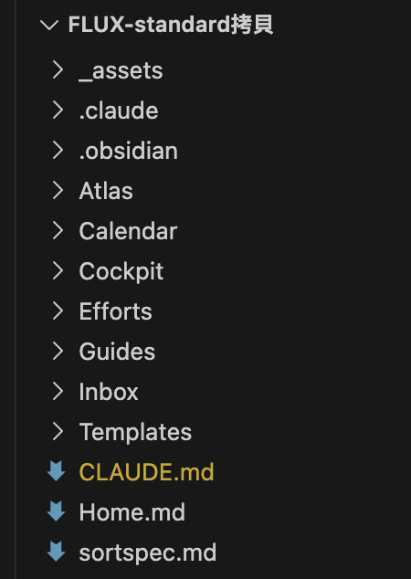
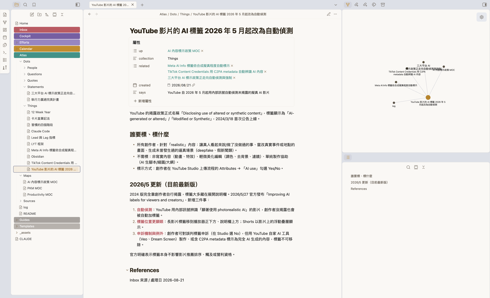
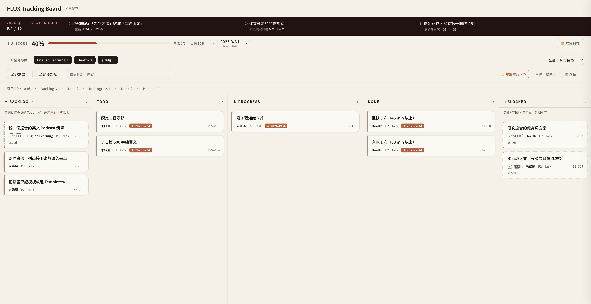
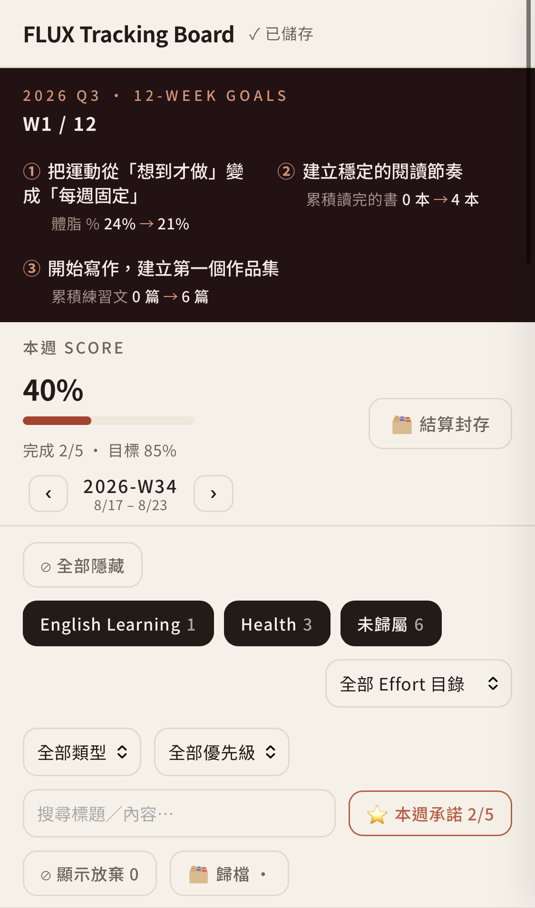
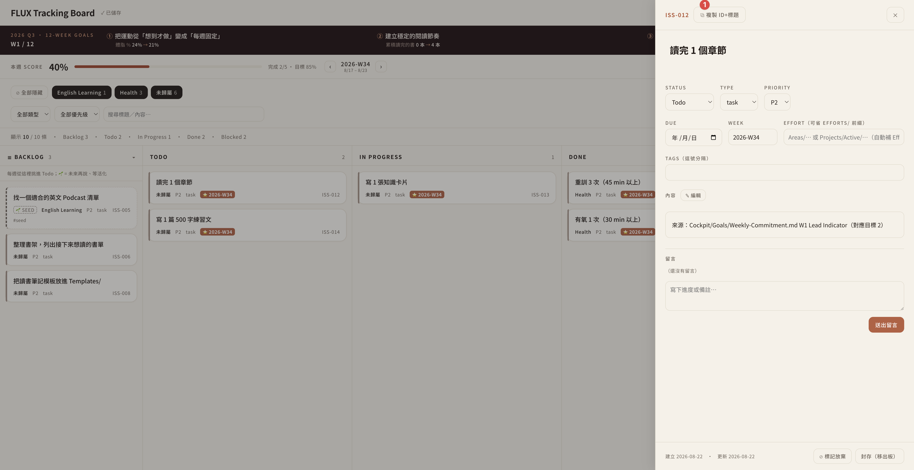

FLUX. ／ 第三梯 · 台北
2026 / 08 / 22台北 · 第三梯
用 AI 建你的
個人指揮中心。
個人指揮中心。
一個記得你的助手 · 每天的開工收工 · 一座查得到出處的知識庫 · 你自己建的第一個 Skill · 一塊看得見的任務板。
講師 余文皓
匯流顧問有限公司
2026 / 08 / 22
用 AI 建你的個人指揮中心 · 2026/08/22 · 台北第三梯
BLOCK 0開場 · 15 MIN
AI 取代
會被淘汰
再不學就來不及
這些工作最先消失
白領首當其衝
不是 AI 取代你，是會用 AI 的人取代你
五年內消失的職業
企業導入 AI 後裁員
Agent 元年
AI 焦慮
人力精簡
一人公司
同事已經在用了
你還在用人工？
提示工程
AI 素養
落後就追不上
不轉型就淘汰
數位轉型
學不完
每週都有新的
先卡位再說
這一年，你的動態牆大概長這樣。
2 / 138
BLOCK 0 · 這一年
BLOCK 0開場 · 15 MIN
所以我開始追。
問答 · 查東西
ChatGPT · Claude · Gemini · Grok · Perplexity
讀一疊資料
NotebookLM · Perplexity Spaces · 各種 PDF 問答
簡報 · 做圖
Gamma · Canva AI · Napkin · Midjourney · Ideogram
開會 · 逐字稿
Otter · Fireflies · tl;dv · 各家內建的會議摘要
影音 · 配音
HeyGen · Suno · ElevenLabs · CapCut · Runway
寫東西 · 筆記
Notion AI · Heptabase · 各家內建的寫作助手
自動化 · 代理
n8n · Make · Zapier · Manus · 一堆自訂 GPTs
⋯⋯還有上禮拜才存下來、到現在還沒點開的那幾個。
確實都比較快了 —— 但每一個，都只幫我一小段。
3 / 138
BLOCK 0 · 所以我開始追
BLOCK 0開場
一小段、一小段 ——
下班之後，散在各個地方。
下班之後，散在各個地方。
NotebookLM 讀完的，留在 NotebookLM。Gamma 做的簡報，留在 Gamma。三個月後你要找那份東西 —— 記得在哪一個裡面嗎？
開場 · 15 MIN
4 / 138
所以今天開場
建一個AI 工作環境。
那二十個入口
在別人的網站上
你去它那裡、用完就走
東西留在它家，不在你家
下次再從頭講一次你是誰
明年換一個新的 —— 重來
一個工作環境
在你自己的電腦裡
它讀得到你的檔案
做出來的東西留在你的資料夾
它記得你是誰
用越久，它越知道你怎麼做事
二十個入口→ 一個地方。
5 / 138
BLOCK 0 · 所以今天
下課之後你的一天
下課之後，你的一天長這樣。
早上 · 打兩個字
~/FLUX-standard $ claude
> 開工
🟢 ☐ 下午的會，資料備好了
🟢 ☐ 上週查的那批，已歸檔
🟡 ☐ 三封信還沒回
🔴 ☐ 今天要去健身房重訓
3 分鐘全部攤開、你挑 —— 不用再自己湊。
顏色 · 誰動手
🟢 綠
它直接做完
三條都成立才算綠 —— 不對外發送 · 不刪唯一一份 · 只動你自己的檔案
🟡 黃
它備料，你拍板
它收集、建議、列選項 —— 最後決定的是你
🔴 紅
你自己做
只有你做得到、只有你能負責。它只幫你把材料放好
⚪ 灰
今天不動
明天的候選 —— 寫下來，但不排時段
每件事歸哪一色 ——是你判斷的，不是背清單。
6 / 138
BLOCK 0 · 下課之後
我是誰開場 · 30 秒
我是余文皓。
7 年
工程師
→
10 年
專案經理
→
3 年
數據分析
→
Minerva · MDA
決策分析碩士
→
2025 · 第一批
Claude Code 使用者
→
2026
匯流顧問成立
我在公司裡上了二十年的班 —— Nokia、聯詠、友達，科技業。
2023 年邊上班邊唸碩士，整個過程跟 AI 一起做。2025 年離開公司。
Claude Code 第一批使用者 —— 拿它做產品、管公司、也管生活。今年成立匯流顧問。
✦
Claude Partner Network
匯流顧問有限公司 · Anthropic 官方夥伴體系


新工具還是會一直出 —— 我已經不追了。今天之後，你也不用。
7 / 138
BLOCK 0 · 我是誰
輪到你一句話 · 互相認識
開始之前 —— 一句話，讓大家認識你。
說兩件事
你的名字，
再加一句話。
再加一句話。
A
今天想帶走什麼 —— 想解決的那件事、卡住的那個環節。
B
1:1 之後跑下來的心得 —— 這幾週用起來，有什麼發現。
講哪個都好 —— 今天七站，我會接住它。
今天這一屋子
明勳
秀珠
亦昀
建慧
伯年
淑婧
政輝
怡樺
筱惠
家馨
力齊
倫有
嘉玲
媗甯
怡璇
助教
彥甫
—— 卡住舉手，他會過去
攝影
Roger
—— 不想入鏡跟我說一聲
8 / 138
BLOCK 0 · 互相認識
BLOCK 0AI 工具現況
互相認識了 ——
接下來，認識你的工具。
接下來，認識你的工具。
先看看現在的 AI 工具
9 / 138
現在的樣子三家 · 2026 年 8 月
不是只有一個 AI —— 三家都在鋪一整排入口。
OPENAI
你們最可能已經在用的那家
GOOGLE
綁在 Search、Gmail、Chrome 裡
ANTHROPIC · 今天用這家
公司課前幫你們裝好的
在瀏覽器裡聊天
ChatGPT
Gemini
Claude.ai
在你的電腦上 · 跟你的檔一起工作
Codex
Antigravity
Claude Code ★ 今天主角
桌面 agent · 不用寫程式
ChatGPT Work 7 月新的
—
Claude Cowork
在你原本的文件工具裡
—
Gemini in Workspace
Claude in Excel · PowerPoint
給工程師串接
API
AI Studio
API
這半年收掉的：Sora（4/26 關） · Gemini CLI（6/18 關） · ChatGPT Atlas（8/9 關 —— 上週才收的）
10 / 138
BLOCK 0 · 三家生態系
你在哪跟它講話越來越多地方
Claude 給你 —— 越來越多地方跟它對話。
Claude API
DEVELOPER · 開發者
工程師串接用、今天不碰。知道有這個。
GA · 2023 / 03
Claude.ai
BROWSER · 瀏覽器
開分頁跟它聊天。跟 ChatGPT 同一類。
GA · 2023 / 07
★ 今天主角
Claude Code
LOCAL · 本機
跟你的檔案在同一空間 —— 能讀、能寫、能跑。
GA · 2025 / 05
Claude Cowork
DESKTOP · 桌面 App
知識工作者的桌面版。跟 Code 像、長相不同。
GA · 2026 / 04
Claude Design
VISUAL · 設計
用對話做簡報、設計稿 —— 有興趣回家自己玩。
2026 / 04 · 研究預覽
把剛才那一欄放大 —— 同一家、五個入口，差別在你在哪跟它講話。今天我們用最能跟你檔案一起工作的：Claude Code。
11 / 138
BLOCK 0 · L1 HOST 平台
THE JOURNEY今天一整天
工具定了 —— 今天走這七站。
01
打開工作環境 —— 驗一次環境，讓 Claude 記得你
02
把系統開機 —— 目標、本週、今天，第一次「開工」
休息 15 分鐘
03
建知識庫 —— 用你自己的題目，查一次、存一次成品 ①
04
接上信箱、行事曆 —— 讓它看得到你的一天成品 ②
午餐 12:30 – 13:30
05
把流程教給它 —— 建出你自己的第一批 skill成品 ③
休息 5 分鐘
06
做一塊任務板 —— vibe coding —— 自己動手，部署上線成品 ④
07
收尾 —— 現場跑一次完整流程，確認會動
網頁上寫五站 —— 今天多給你一站：自己動手做一塊上線的任務板。下課的時候，每一站你都自己動手做過一次。
12 / 138
BLOCK 0 · 今天的旅程
帶走下課的時候
下課的時候，你電腦裡會有 ——
01
一套裝好的 AI 工作環境 —— 你自己的檔案已經搬進去
02
一份記得你的 CLAUDE.md —— 你是誰、你怎麼做事
03
一套跑起來的節奏 —— 目標、本週、今天，「開工」開得起來
04
一座知識庫雛形 ＋ 你自己查的第一批卡成品 ①
05
接好的信箱、行事曆 —— 它看得到你的一天成品 ②
06
你自己建的 skill —— daily · eod · wam，喊一聲整套跑成品 ③
07
一塊上線的任務板 —— 有網址，手機打得開成品 ④
不是聽過 —— 是用過。不是看過 —— 是建過。不是別人的 —— 是你的。
13 / 138
BLOCK 0 · 下課帶走
開始之前三件約定
開始之前 —— 三件約定。不是規則，是請求。
01
今天一整天，請斷其他事。
手機翻過來、信箱通知關掉 —— 七站是串著的，跳著聽會接不上。
手機翻過來、信箱通知關掉 —— 七站是串著的，跳著聽會接不上。
02
卡住就舉手 —— 我跟彥甫都在，別自己卡著。
指令、權限、中文輸入都會卡；悶著自己查三十分鐘，是今天最大的浪費。
指令、權限、中文輸入都會卡；悶著自己查三十分鐘，是今天最大的浪費。
03
今天建的是骨架。
我自己用了快一年，才長成現在的樣子 —— 今天把骨架立起來，回去養它，它才會長成你的。
我自己用了快一年，才長成現在的樣子 —— 今天把骨架立起來，回去養它，它才會長成你的。
三件事 —— 我們開始。
14 / 138
BLOCK 0 · 約定
BLOCK 1環境＋記得你
先把你的
工作環境打開。
工作環境打開。
環境＋記得你 · 40 MIN
15 / 138
SETUP一次設定 · 之後不用做
先打開工作資料夾 —— Claude 才讀得到你的檔。
1
點左邊最上面的檔案總管
像兩張紙疊在一起的那個圖示。
2
按「開啟資料夾」
3
選你的 FLUX-standard
左側就出現工作資料夾的檔案樹

先開工作資料夾Claude 只讀「你打開的那個資料夾」—— 動手前一定要先開。
16 / 138
BLOCK 1 · OPEN YOUR VAULT
YOUR WORKBENCH一個視窗 · 三個區域
今天的工作台 —— VS Code 一個就夠。

1
檔案總管
你的工作資料夾攤在左邊 —— 哪個檔在哪，一眼看得到。
2
編輯器
中間這塊 —— Claude 改的、你自己改的，都在這裡看。
3
對話入口
右邊那一欄 —— 你跟它講話的地方。
今天所有的動手都在這一個視窗裡 —— 檔案、編輯、跟它講話，不用切來切去。
17 / 138
BLOCK 1 · WORKBENCH
30 秒檢查你手上這份是不是最新的
動手之前 —— 打開 CLAUDE.md，看第 3 行。
1
左側點開 CLAUDE.md
它不在任何資料夾裡面 —— 資料夾列完，往下捲就看得到。
2
看第 3 行寫什麼
應該寫 v2.0（build 2026-08-09.2）。
3
不一樣的請舉手

就在這
CLAUDE.md — FLUX-standard
1 # FLUX Vault — AI 指令
2
3 > FLUX-standard **v2.0**（build 2026-08-09.2）
4
5 你是使用者的個人助手，協助管理 **FLUX** 系統。
6
7 **FLUX = Focus, Learn, Upgrade, eXecute**
8 ⋯⋯
18 / 138
BLOCK 1 · VERSION CHECK
對話入口別被它嚇到
右邊那一欄 —— 它就是一個對話框，跟 ChatGPT、Claude.ai 一樣。
你平常用的
ChatGPT · Claude.ai
幫我把這段話改得口語一點。
好 —— 我改好了，你看看這樣順不順。
VS Code 右邊那一欄

打字打這裡
先切到 Auto ↘
你今天只會做這兩件事
1
用中文和 Claude 對話
跟你傳訊息給同事一樣 —— 想到什麼就打什麼。
2
現在先切到 Auto
右下角那個 Auto —— 切過來，它做事就不會一路停下來問你。
中間會刷出一堆看不懂的字、有時候還蹦出怪符號 —— 那是它在做事，不是你弄壞了。不用擔心。
打字的地方換了你要打的東西沒變 —— 一樣是講人話，一樣是它回你。
19 / 138
BLOCK 1 · 對話入口
BLOCK 1為什麼是 Claude Code
既然和 ChatGPT、Claude.ai 一樣，
那今天為什麼不用它們？
那今天為什麼不用它們？
先動手 · 做完你就知道差在哪
20 / 138
HANDS-ON · 它在你電腦裡叫它看你的機器
它住在你的電腦裡面。
試試看 · 把這句丟給它
> 我覺得電腦有點慢。幫我看看：記憶體總共多大、現在被哪些程式吃最多、哪些可以安全關掉？順便看硬碟還剩多少、什麼佔最大。
> 我覺得電腦有點慢，幫我看看記憶體…
⏺ 看系統狀態（top · vm_stat · df · du）…
⎿ 記憶體：共 16 GB、已用 13.8 GB（偏高）
⎿ 吃最多：Chrome（38 分頁）2.9 GB · Slack 1.1 GB · 預覽 0.8 GB
⎿ 可關：Chrome 舊分頁 + 沒在用的 Slack ≈ 放掉 3–4 GB
⎿ 硬碟：500 GB 剩 42 GB · Downloads/ 46 GB 最大宗
⏺ 建議：關掉沒用的 Chrome 分頁 + 清 Downloads，會明顯順。
它看到的是你這一台不是你貼上去的東西 —— 是你現在真實的狀態。瀏覽器裡的 AI 看不到這些。
21 / 138
BLOCK 1 · IT LIVES HERE
WHY CODE它在不在你工作的地方
換成 ChatGPT、Claude.ai —— 這三件事會變怎樣？
CHATGPT / CLAUDE.AI · 在瀏覽器
CLAUDE CODE · 在你電腦上
它看得到什麼
✗只看得到你貼上去、傳上去的東西
✓你這台機器、你整個資料夾
它能不能動手
✗只能告訴你怎麼做 —— 動不了你的檔案
✓自己做 —— 剛剛它真的跑了指令
做完的東西放哪
✗停在分頁裡 —— 要自己複製或下載回來
✓寫回你的資料夾，存檔就在那
差別不是誰比較聰明是它在不在你工作的地方 —— 一個在分頁裡，一個在你的電腦裡。
22 / 138
BLOCK 1 · WHY CODE
BLOCK 1你的工作區
它在你的電腦裡 ——
那你的東西，放哪？
那你的東西，放哪？
你的工作區 · FLUX
23 / 138
你的工作區它叫 FLUX
都放這裡 —— 這個工作區，我叫它 FLUX。
~/FLUX-standard
FLUX-standard/
├── Cockpit/
├── Efforts/
├── Atlas/
├── Inbox/
├── Calendar/
├── Guides/
├── Templates/
└── CLAUDE.md ★
FLUX = Focus · Learn · Upgrade · eXecute
七個資料夾，加一份給 Claude 看的說明書。
就在你電腦上
沒有雲端、沒有帳號 —— 就是一個資料夾，你隨時搬得走。
今天開始往裡面放東西
你的規劃、查到的資料、做出來的成品 —— 一格一格放進來，它就會愈來愈理解你的工作。
順手做一件事 · 讓它能存檔 —— 複製貼進 Claude
> 幫我看這個 vault 有沒有在記錄改動（git）。沒有的話建起來，存第一個檔，訊息寫「上課前的樣子」。
現在不用記每一格用到哪一格，我再帶你進去 —— 今天改壞什麼都回得去。
24 / 138
BLOCK 1 · THE VAULT
BLOCK 2它要知道你要去哪
它幫得了你多少 ——
看它知不知道你要去哪。
看它知不知道你要去哪。
先講清楚為什麼 · 再開始建
25 / 138
它要怎麼知道有一本書講過這件事
這本書你大概聽過 —— 搞不好家裡就有一本。
ATOMIC HABITS

《原子習慣》
James Clear 寫的 —— 全球賣破千萬本，講「怎麼改變自己」的書裡最有名的一本。
它的核心主張：改變不是從結果開始 —— 是從你是誰開始。
你是誰
身分認同
→
你的系統
怎麼運作
→
你的習慣
每天做的
→
結果
自然來
而我們最不缺的 · 就是「知道」
01
該規律運動 —— 知道。
02
該建立好習慣 —— 知道。
03
資料該好好整理 —— 知道。
每年一月也都立過目標 —— 三月歸零，然後結論永遠是「我不夠自律」。
這條鏈你也懂但多數人走不到第二層 —— 系統那裡就斷了。先看我以前的一天，你就知道斷在哪。
26 / 138
BLOCK 2 · 先講一本書
現實的困境看一天就懂
現在的你，跟二十歲的你 —— 差別在哪？
不是意志力變弱了。拿我自己當例子 —— 還在竹科帶專案的那幾年，一天長這樣。
07:00
弄早餐、送小孩出門 —— 自己那份在車上吃
08:30
進園區 —— 昨晚客戶寄來的信排在最上面，先回它
10:00
專案會 —— 進度落後，回去整個要重排
12:00
便當在會議室吃 —— 下午給老闆的簡報還沒改完
14:00
三場會接著開 —— 每一場都有人等你給答案
18:00
老闆傳來 —— 明天早上要一版新的報告
21:00
到家 —— 小孩準備睡了，講不到十分鐘的話
22:30
打開筆電 —— 把白天沒空做的做完
這時叫他「撥半小時，為五年後的自己做點事」？不是他不想 —— 是精神跟力氣，下午三點就用光了。
27 / 138
BLOCK 2 · 現實的困境
說出來也沒關係訂目標這種事
而且不只是沒力氣 —— 你心裡還有幾句話。
我連下個月都說不準 —— 還談以後？
以前寫的年度目標，沒一個做到。
計畫永遠趕不上變化 —— 寫了也是白寫。
我光把交辦的做完就飽了，哪還有「目標」。
我又不是要創業 —— 我就想用 AI 把手上的事處理快一點。
這幾句話，其實是同一句我維持不了。
28 / 138
BLOCK 2 · 我知道你在想什麼
先把觀念換掉方向 ≠ 終點
方向不是終點 —— 是拿來校正的。
01
像航海看北極星
靠它定方向 —— 但沒有人把北極星當目的地。你不會到達它，你是每天晚上拿它確認：有沒有走偏。
例：「案子是別人來找我，不是我去找。」
02
改的是路，不是星
每個禮拜坐下來調一次 —— 十二週，調十二次。不是重寫方向，是換走法。
例：這一季本來要衝短影音 —— 第五週發現，看完影片的人不會來談案子。
那就回去改：先把部落格寫起來。
那就回去改：先把部落格寫起來。
03
做得快，不等於往前
Claude 會讓你做每件事都更快 —— 但它不知道你要去哪。
例：沒有那顆星，快只有兩種結果 ——
跑錯邊：做完才發現不是你要的。
原地打轉：明年還在做一樣的事。
跑錯邊：做完才發現不是你要的。
原地打轉：明年還在做一樣的事。
29 / 138
BLOCK 2 · 換觀念
所以呢為什麼今天要用 AI 建
系統不用你維持 —— 交給它。
《原子習慣》：「你不會提升到目標的水準 —— 你會下降到系統的水準。」
那條鏈的第二層，今天交給它顧 —— 等一下那四十分鐘，建的就是它。
那條鏈的第二層，今天交給它顧 —— 等一下那四十分鐘，建的就是它。
以前 · 系統要你自己撐
每天早上自己想「今天做哪一件」
每週自己坐下來檢討 —— 多數人第三週就停了
最難的永遠是「開始」—— 光坐下來就要先說服自己
今天之後 · 交給它
叫它一聲 —— 它照你的目標排好今天
每週它自己開口問你 —— 哪裡卡、下禮拜怎麼調
坐下來打兩個字 —— 就開始了
你不用變成更自律的人你只要有一個不會累的助手 —— 它的力氣，不會在下午三點用光。
30 / 138
BLOCK 2 · 所以需要 AI
BLOCK 2讓它記得你
系統的第一件事 ——
先讓它知道你是誰。
先讓它知道你是誰。
CLAUDE.md · 讓 CLAUDE 記得你是誰
31 / 138
CLAUDE.mdNO MEMORY · 它不記得你
Claude Code 沒有記憶。
?
PROBLEM · 問題
01每次打 claude ＝ 全新對話
02教過的事 · 它不記得
03昨天講過的規矩 · 今天要再講一次
是它本來的設計、不是壞掉。
靠什麼解決
↓
✓
SOLUTION · 解法
CLAUDE.md
01每次開機第一件事就讀它
02寫一次 · 它每次都記得
03你剛打開的資料夾裡 · 已經有一份
Claude 的使用說明書。
32 / 138
BLOCK 2 · NO MEMORY
CLAUDE.md裡面長這樣
打開 CLAUDE.md —— 就是一份說明書。
CLAUDE.md — FLUX-standard
# FLUX Vault — AI 指令
> FLUX-standard v2.0（build 2026-08-09.2）
## 你是誰
> 每次互動前讀這幾欄，了解你是誰。
- 稱呼：阿哲
- 角色：自由工作者
- 職業 / 領域：數位行銷
## 基本行為
- 用繁體中文回覆（台灣用語）
- 建立新檔案時，先讀 Templates/ 模板
- 檔名使用繁體中文
## 溝通風格
1. 先給結論，再給理由
2. 最多給 2 個選項
你是誰
你 1:1 那天填的 —— 它每次開口前先讀這幾欄
基本行為
講繁中、建檔先讀範本 —— 這些它已經幫你寫好了
溝通風格
先給結論、最多給你 2 個選項 —— 它跟你講話的方式
這份檔會一直長大 —— 等一下我們就幫它加一欄。它認得你在做什麼了，但還不認得你是哪種人。
33 / 138
BLOCK 2 · CLAUDE.md INSIDE
HANDS-ON身分認同 · 你是哪種人
再給它一欄 —— 你是哪種人。
《原子習慣》說：改變不是從結果開始 —— 是從你是誰開始。你把自己當成哪種人，就會做哪種人會做的事。
1
告訴它你是哪種人
用「我是一個 ⋯⋯」講 —— 不是「我想成為」。
一個詞就行：運動員 · 創業者 · 創作者 · 教練 · 老師
加句形容更準：有成長型心態的創業家 · 把複雜的事講簡單的老師
帶人比自己做更有成就感的主管 · 把家人排在工作前面的人
一個詞就行：運動員 · 創業者 · 創作者 · 教練 · 老師
加句形容更準：有成長型心態的創業家 · 把複雜的事講簡單的老師
帶人比自己做更有成就感的主管 · 把家人排在工作前面的人
2
Claude 會做兩件事
加一欄「身分認同」，再寫一行規矩給它自己
角色＝你靠什麼吃飯 · 身分認同＝你把自己當成誰
換一份工作，角色就換了 —— 創作者不會。
# 貼完之後，檔案變這樣
⏺ Edit(CLAUDE.md) ✓
## 你是誰
- 稱呼：阿哲
- 角色：自由工作者
- 職業 / 領域：數位行銷
- 身分認同：創作者
> 給建議、排事情，都照「身分認同」。
⏺ 好的、我認識你了 ✓
複製這段 · 填你自己的 · 貼進 Claude
> 我是一個{你的身分認同}。請在 CLAUDE.md 的「你是誰」加一欄「身分認同」填上它，再加一行規矩：之後給建議、排事情都要照它。順便看上面三欄填好了沒，沒填的問我。
它現在照這個你來回答 —— 不是照你的職稱，是照你說你是哪種人。
03:00
34 / 138
BLOCK 2 · 身分認同
你的工作系統回來對一次
上課之前寫過 —— 現在再對一次。
這四層不是寫一次交差 · 右邊＝多久回來看一次
VISION
你想過什麼樣的日子？
一年一次
▼
12 週計畫
這一季要拿下哪一件？
一季一次
▼
本週承諾
這禮拜願意做哪幾件？
每週一次
▼
今天的規劃
今天先做哪一件？
每天一次
上課前跑過的 —— 等一下是回來重看、只改要改的。還沒跑過的 —— Claude 會帶你從頭走一次。
上面那一層決定下面那一層少了最上面那格，下面三格照樣排得滿 —— 只是你不知道排的是不是對的。
35 / 138
BLOCK 2 · 回來對一次
這四十分鐘你會走完的七步
七步 —— 走完，從 VISION 到今天全部對過一次。
定方向
12 min
搭好架子
15 min
跑起來
8 min
STEP 01
你要去哪
一句話：你想過的日子
4 min
STEP 02
這季目標
挑一件：這季最重要的
8 min
STEP 03
建資料夾
分兩種：會結束的、一直都在的
7 min
STEP 04
訂結算日
挑一天：每週幾回頭看
3 min
STEP 05
這週做什麼
這禮拜真的會做的幾件
5 min
STEP 06
今天開工
今天先做哪一件
5 min
STEP 07
收尾
之後每天怎麼叫它
3 min
走完之後 · 這五樣都會是最新的
VISION
十年的方向
12 週計畫
這一季要拿下什麼
本週承諾
這禮拜做哪幾件
目標資料夾
你的東西放這裡
今天的規劃
今天先做哪一件
七步加起來 35 分鐘 —— 中間我會停下來講幾個觀念，整段大約四十分鐘。跑過的走得快，第一次跑的我會顧著。
每一步 Claude 都會自己開口問你，螢幕上方會標現在走到哪一步。走完七步，明天早上打「開工」就接得上。
36 / 138
BLOCK 2 · 七步地圖
動手開始先讓它讀你的檔
開始了 —— 先讓它看一眼你手上有什麼。
複製這段 · 貼進 Claude · 全班同一段
> 先讀 Cockpit/Goals/ 的 VISION.md、12-WEEK-PLAN.md、Weekly-Commitment.md，告訴我哪幾份已經有我寫的內容、12 週週期跑到第幾週。接下來我會一段一段給你指令 —— 有寫過的地方帶我重看、只改要改的，不要用範本蓋掉。
貼完你會看到
⏺ Read(VISION.md)
⏺ Read(12-WEEK-PLAN.md)
⏺ Read(Weekly-Commitment.md)
⏺ 讀完了 —— 你現在的狀態：
⎿ VISION 有內容 ✓
⎿ 12 週計畫 有內容 ✓ 第 6 週，還剩 6 週
⎿ 本週承諾 還是範本
⏺ 那我們用重看的。等你下一段。
37 / 138
BLOCK 2 · 暖機
STEP 01你要去哪
十年後，你想過什麼樣的日子？
STEP 01
你要去哪
STEP 02
這季目標
STEP 03
建資料夾
STEP 04
訂結算日
STEP 05
這週做什麼
STEP 06
今天開工
STEP 07
收尾
一句話 · 具體到可以拿來判斷
不靠上班也有穩定收入 —— 工作變成選擇。
案子是別人來找我，不是我去找。
六十歲還揹得動背包，走得動一整天。
一年有兩個月不在台灣，工作照常運轉。
重要的人生病、畢業、過生日 —— 我都在場。
自己開一間小工作室，帶兩三個人，接自己挑的案子。
不用寫得漂亮、也不用一次寫到位 —— 先有一句，之後每年回來看一次。
複製這段 · 貼進 Claude · 全班同一段
> 第一題：十年後我想過什麼樣的日子。先看 VISION.md 的 10 年願景 —— 已經寫過的，唸給我聽，讓我確認還要不要調整。空的或還是範例，就直接問我，我回答之後幫我寫進去。其他段先留白。
這就是你的北極星 —— 不是拿來到達的，是拿來確認有沒有走偏。後面每一題，都會回來對它。
04:00
38 / 138
BLOCK 2 · STEP 01
為什麼是 12 週年太遠 · 月太短
為什麼不是一年 —— 也不是一個月？
STEP 01
你要去哪
STEP 02
這季目標
STEP 03
建資料夾
STEP 04
訂結算日
STEP 05
這週做什麼
STEP 06
今天開工
STEP 07
收尾
一年
太遠
前面九個月都覺得還早，最後三個月才開始慌。
「今年要把身體練好」—— 三月講、九月還是同一句。
「今年要把身體練好」—— 三月講、九月還是同一句。
一個月
太短
還沒進入狀況就到期，做不完一件像樣的事。
一個月只夠開兩次會、收一輪資料。
一個月只夠開兩次會、收一輪資料。
12 週
剛剛好
夠長，做得完一件像樣的事；夠短，你還記得自己設了什麼。
而且每週回頭看一次，偏了馬上知道。
而且每週回頭看一次，偏了馬上知道。
這 12 週長這樣 · 每週結算一次
W1
W2
W3
W4
W5
W6
W7
W8
W9
W10
W11
W12回顧
39 / 138
BLOCK 2 · 為什麼是 12 週
STEP 02這季目標
做完哪一件事 —— 你會覺得這一季沒白過？
STEP 01
你要去哪
STEP 02
這季目標
STEP 03
建資料夾
STEP 04
訂結算日
STEP 05
這週做什麼
STEP 06
今天開工
STEP 07
收尾
這一題其實是三題 · 等一下一起答
01
那一件事
這一季要拿下的哪一塊 —— 從你的十年方向往回推。第一次寫先設一個；已經有的，一個一個過。
02
你想要的結果
到你的第 12 週那天，要看到什麼，你才敢說完成了。
03
你控制得了的行動
為了那件事，你會做的那兩三件 —— 做了就是做了，不用等結果。
一個填好的樣子 · 從十年那一句往回推
十年案子是別人來找我，不是我去找。▼ 往回推
這一季把個人品牌做起來。
臉書追蹤者從 1,000 → 3,000。
每週 PO 文 3 篇 · 讀理財經典書 2 章。
② 你想要的結果 和 ③ 你控制得了的行動 最容易寫反 —— 接下來兩頁專門講這兩題。
40 / 138
BLOCK 2 · STEP 02
LAG / LEAD一句話就分得出來
同樣要做個人品牌 —— 哪一句追得動？
STEP 01
你要去哪
STEP 02
這季目標
STEP 03
建資料夾
STEP 04
訂結算日
STEP 05
這週做什麼
STEP 06
今天開工
STEP 07
收尾
A · 你想要的結果
B · 你控制得了的行動
臉書追蹤者破 3,000
今天發了什麼，明天看不出來 —— 你控制不了它什麼時候發生。
每週 PO 文 3 篇
今天發了就是發了、沒發就是沒發 —— 100% 你說了算。
有人主動來談案子
每週寫一篇案例
電子報訂閱破 1,000
每兩週發一封
這兩欄有正式名字 —— 你想要的結果叫 LAG、你控制得了的行動叫 LEAD。LEAD 只有一個條件：你 100% 控制得了 —— 做了就是做了。頻率不限，每週、每兩週、每次上完課都算。
我做這個行動，它一定會發生嗎？會 —— 那是 LEAD，這一季就追它。
不一定 —— 那是 LAG，寫下來當參考，別拿它算成績。
不一定 —— 那是 LAG，寫下來當參考，別拿它算成績。
41 / 138
BLOCK 2 · LAG / LEAD
BLOCK 2LAG / LEAD
你只能控制 Lead ——
Lag 是它的副產品。
Lag 是它的副產品。
這一季追 LEAD · LAG 放旁邊看
42 / 138
STEP 02動手 · 換你談這一季
換你了 —— 這一季要拿下哪一件？
STEP 01
你要去哪
STEP 02
這季目標
STEP 03
建資料夾
STEP 04
訂結算日
STEP 05
這週做什麼
STEP 06
今天開工
STEP 07
收尾
複製這段 · 貼進 Claude · 全班同一段
> 第二題：這一季要拿下哪一件事。先看 Cockpit/Goals/12-WEEK-PLAN.md —— 已經有目標的，一個一個唸給我聽，讓我確認還要不要調整；開頭寫著「這是範例」或還是空的，就直接問我。每個目標都問三件：這一件是什麼 · 我想要的結果 · 我控制得了的行動（兩三件）。談完幫我更新回檔案，並標上每個目標對齊 VISION 的哪一句。
談完之後 · 12-WEEK-PLAN.md 會變這樣
⏺ Edit(Cockpit/Goals/12-WEEK-PLAN.md) ✓
## 目標 1：這一季把個人品牌做起來
> 對齊 VISION：「案子是別人來找我，不是我去找。」
Lag Indicator（你想要的結果）：
- 臉書追蹤者從 1,000 → 3,000
Lead Indicators（你控制得了的行動）：
- 每週 PO 文 3 篇
- 每週讀理財經典書 2 章
08:00
43 / 138
BLOCK 2 · STEP 02 動手
STEP 03建資料夾
目標有了 —— 現在幫它開一個資料夾。
STEP 01
你要去哪
STEP 02
這季目標
STEP 03
建資料夾
STEP 04
訂結算日
STEP 05
這週做什麼
STEP 06
今天開工
STEP 07
收尾
它只問你一句 ——「這件事有完成那一天嗎？」
A · PROJECT 專案
B · AREA 領域
有完成那一天
開始 → 做 → 交出去 → 封存
做完它就不再占位子 —— 開工不會再掃到。
沒有完成那一天
一直在 · 只有做得好不好
只要你還在做這件事，它就一直都在。
十月那場活動
個人品牌
年底要考的那張證照
帶團隊 —— 每個人的狀況
複製這段 · 貼進 Claude · 全班同一段
> 第三題：幫我的目標開資料夾。先看 Efforts/ 裡已經有的，有的就不要重建。這一季的目標先開；我手上還在跑的事我會講給你聽，你一件一件問我「這件事有完成那一天嗎」—— 有就開成 Project、沒有就開成 Area，照 vault 原本的結構放好。
建好就有地方放 —— 檔案、進度、紀錄全收進去。例行的今天先不用管。
07:00
44 / 138
BLOCK 2 · STEP 03
STEP 04訂結算日
每個禮拜要有一天 —— 回頭看一次。
STEP 01
你要去哪
STEP 02
這季目標
STEP 03
建資料夾
STEP 04
訂結算日
STEP 05
這週做什麼
STEP 06
今天開工
STEP 07
收尾
結算日那天 · 15 分鐘
①
看這禮拜哪些做到了
跟它一起，一件一件對。
②
沒做到的，一起找原因
是沒時間，還是做了沒效果。
③
它幫你排下禮拜
調過的量、換過的做法，直接排進去。
做到七成就很好 —— 全做到，代表你排太少。
複製這段 · 貼進 Claude · 全班同一段
> 第四題：訂結算日。先看 Cockpit/Goals/12-WEEK-PLAN.md 的週期資訊 —— 已經有週期在跑的，不要重設起訖、不要重算週期表，告訴我現在第幾週、還剩幾週，帶我看這幾週做到什麼。還沒有的，問我想每週哪一天結算，然後從今天起算 W1，把 W1 到 W12 的起訖和結算日全部算好寫進去。
沒有結算日，計畫就只是願望。
03:00
45 / 138
BLOCK 2 · STEP 04
BLOCK 2結算日
訂好日子只是開始 ——
難的是那天真的坐下來。
難的是那天真的坐下來。
那天它會幫你看出兩件事
46 / 138
每週一次逐週檢討 · 逐週調
每個禮拜跟它一起調一次 —— 十二週，調十二次。
STEP 01
你要去哪
STEP 02
這季目標
STEP 03
建資料夾
STEP 04
訂結算日
STEP 05
這週做什麼
STEP 06
今天開工
STEP 07
收尾
它最常幫你看出來的兩件事
A
做到了 —— 但沒往前
每週 PO 文 3 篇，這禮拜全發了 —— Lead 100%，但追蹤者一個都沒多。
發的都是自己的心得 —— 有發，但沒有人想轉。
→ 改策略：篇數一樣，換題目 —— 寫別人會想存下來的。
B
根本做不到
想每週 PO 文 3 篇，這禮拜只發了 1 篇 —— Lead 33%。
訂太多了 —— 一個禮拜就是擠不出三篇。
→ 調期望值：三篇改成兩篇。
→ 挪時間：砍掉其他的，騰出時間寫三篇。
→ 挪時間：砍掉其他的，騰出時間寫三篇。
重點不是做到幾成是你有沒有回來調 —— 一週調一次，十二週調十二次。
47 / 138
BLOCK 2 · 結算日那天
STEP 05這週做什麼
為了這一季的目標 —— 這禮拜你願意做哪幾件？
STEP 01
你要去哪
STEP 02
這季目標
STEP 03
建資料夾
STEP 04
訂結算日
STEP 05
這週做什麼
STEP 06
今天開工
STEP 07
收尾
複製這段 · 貼進 Claude · 全班同一段
> 第五題：排這禮拜。先看 Cockpit/Goals/Weekly-Commitment.md —— 已經有本週清單的，唸給我聽，讓我確認這禮拜還做不做得到、要不要調；空的或還是範例，就從 12-WEEK-PLAN.md 拿出我控制得了的行動，跟我討論這禮拜排得下哪幾件、各排幾次。談完才寫 —— 更新回檔案，本週起訖和結算日期一起填好。
談完之後 · Weekly-Commitment.md 會變這樣
## 本週
- Week：W1 - 本週起訖：8/22 ~ 8/28 - 結算日：8/28
### Lead Indicators
對應目標 1（這一季把個人品牌做起來）：
- [ ] 每週 PO 文 3 篇
- [ ] 讀理財經典書 2 章
這一組每週都會回來 —— 結算日打勾的就是它。
05:00
48 / 138
BLOCK 2 · STEP 05
STEP 06今天開工
打「開工」兩個字 —— 它幫你寫今天。
STEP 01
你要去哪
STEP 02
這季目標
STEP 03
建資料夾
STEP 04
訂結算日
STEP 05
這週做什麼
STEP 06
今天開工
STEP 07
收尾
它讀你的本週清單、看你手上的案子，寫出今天的規劃 —— 你不用打開任何檔案。
就這兩個字 · 貼進 Claude
> 開工
貼完你會看到
⏺ 早安。今天是 W1 第 1 天，還有 6 天到結算日。
⎿ 這禮拜你要做的 3 件：
・每週 PO 文 3 篇
・讀理財經典書 2 章
・主動聯絡兩個潛在客戶
⏺ 今天要先做哪一件？其他的我幫你排後面。
⏺ 寫好了 ✓ Cockpit/Daily/2026-08-22.md
「開工」這兩個字，明天早上就用得到。
05:00
49 / 138
BLOCK 2 · STEP 06
STEP 07收尾
四層對完了 —— 從十年到今天，接成一條。
STEP 01
你要去哪
STEP 02
這季目標
STEP 03
建資料夾
STEP 04
訂結算日
STEP 05
這週做什麼
STEP 06
今天開工
STEP 07
收尾
一層推一層 · 拿個人品牌那個例子看一次
VISION
你想過什麼樣的日子？
✓ 案子是別人來找我
▼
12 週計畫
這一季要拿下哪一件？
✓ 把個人品牌做起來
▼
本週承諾
這禮拜願意做哪幾件？
✓ PO 文 3 篇 · 讀書 2 章
▼
今天的規劃
今天先做哪一件？
✓ 今天先寫第一篇
＋ 目標資料夾 —— 這件事的檔案、進度、紀錄，全部收在那裡。
今天跑的是骨架 · 還沒補的回家補完
① VISION 完整版（Anti-Vision、3 年、核心價值觀） ② 第 2、3 個 12 週目標 ③ 其他案子的資料夾
明天早上打「開工」系統會自己接上 —— 七步到這裡全部走完。
50 / 138
BLOCK 2 · STEP 07
BLOCK 2休息之前
四十分鐘建了一套系統 ——
一年後，它會給你什麼？
一年後，它會給你什麼？
先講一個觀念 · 再說我自己的事
51 / 138
一年後的差別資產配置
同樣忙一年 —— 為什麼有人往前、有人原地？
差別不在你多忙 —— 在你的忙有沒有留下東西。
做完就歸零的
回不完的信、臨時的交辦
開完就散的會
上個月查過的資料，這個月再查一次
開完就散的會
上個月查過的資料，這個月再查一次
明年這個時候 —— 還在做一樣的事。
會累積下來的
查過的東西存下來，下次不用重查
每週結算一次，這週的教訓下週用上
目標寫清楚，每天做的事往同一邊疊
每週結算一次，這週的教訓下週用上
目標寫清楚，每天做的事往同一邊疊
明年這個時候 —— 站在今年的上面。
「資產配置」的意思：每天的時間是本金 —— 固定撥一點，投在會累積的那一邊。你們今天建的系統，就是那一邊。
一年後的差別，不在誰比較忙在誰的忙 —— 有累積下來。
52 / 138
BLOCK 2 · 資產配置
我自己的例子說一段實話
我把二十年的票 —— 投給了誰？
《原子習慣》說：每個行動，都是投給「你想成為哪種人」的一票。我二十年的票，都投在做完就歸零的那一邊。
我每天做的
投出去的票
每天加班到十點
→
投給「負責任的主管」
行事曆填到全滿
→
投給「不可或缺的人」
假日照回訊息
→
投給「隨時找得到的人」
二十年，幾萬張票 —— 很勤奮、很自律，把自己雕刻成一個角色。
但那個角色，掛在別人的組織圖上組織一調整，隨時可以被擦掉。更重要的是 —— 那個角色過的生活，不是我想要的。
53 / 138
BLOCK 2 · 我自己的例子
重新投票我現在做的
那我現在 —— 把票投給誰？
同樣是勤奮、同樣每天在做事 —— 換的是投給哪一種人。
我現在做的
投出去的票
經營自己的部落格
→
投給「靠自己招牌吃飯的人」
融入 Anthropic（Claude）的生態系
→
投給「越做越值錢的人」
每天留兩小時 —— 陪小孩、運動
→
投給「和孩子有親密關係的爸爸」
一樣勤奮只是這次投的每一票，都在讓自己未來有更多選擇。
54 / 138
BLOCK 2 · 我現在投給誰
重新投票之後315 天
我原本給自己兩年 —— 走到的是第九個月。
2025
04 月
離開待了二十年的科技業 —— 沒有下一份工作。
先備好兩年的家庭生活費，然後開始找新的方向。
2025
10 月
開始搭這套系統。
每個禮拜坐下來一次，問自己同樣兩題：這禮拜哪裡卡、下禮拜改什麼。
2026
04 月
第一筆收入進來。
從十月算起，半年。
2026
07 月
生活回到自己手上。
做自己有興趣的題目、顧得到家裡跟小孩，收入也回到離職前以上。
從十月算起，九個月 —— 原本抓的是兩年。
從十月算起，九個月 —— 原本抓的是兩年。
從那個十月到今天，315 天 —— 每天早上排一次今天，就是投了 315 張票。你們剛剛投出的，是第 1 張。
今天做到的那幾件，就是投出去的一票一天一張，一張一張投 —— 上面這條時間軸，就是這樣投出來的。
55 / 138
BLOCK 2 · 我自己的例子
BLOCK 2帶一題回家
今晚睡前，想一題 ——
你想過的日子，長什麼樣子？
你想過的日子，長什麼樣子？
回去把 VISION 寫得更完整 —— 照它設 2–3 個 12 週目標，訂出下禮拜的承諾。
明天早上打「開工」—— 它排的，就是你的承諾。
明天早上打「開工」—— 它排的，就是你的承諾。
休息 15 分鐘 · 回來進下一站「知識管理」—— 讓查過的東西，不再消失
56 / 138
休息一下15 分鐘 · 回來接著做
休息
15:00
站起來走一走、喝個水。
回來還有四站 —— 知識管理 · 接上信箱行事曆 · 教它學會你的做法 · 做出一個自己的網頁。
接下來全部都是動手。
回來還有四站 —— 知識管理 · 接上信箱行事曆 · 教它學會你的做法 · 做出一個自己的網頁。
接下來全部都是動手。
電腦別關 · VS Code 跟 Claude 開著
57 / 138
BREAK · 休息
BLOCK 2 → BLOCK 3東西放哪
系統會跑了 ——
那你查過的東西呢？
那你查過的東西呢？
前面兩站，你把要做什麼裝進去了。
接下來這 50 分鐘，裝的是你讀過、查過、判斷過的東西 —— 而且要讓它半年後還找得回來。
接下來這 50 分鐘，裝的是你讀過、查過、判斷過的東西 —— 而且要讓它半年後還找得回來。
知識管理 · 50 MIN
58 / 138
知識管理這一站兩件事
這 50 分鐘 —— 你會帶走兩樣東西。
01
一個半年後還找得到的知識庫
不是暫存、不會被歸檔、不會結案搬走。
你今天查的東西，明年還調得出來。
你今天查的東西，明年還調得出來。
02
用你自己的題目跑一次
查完、拆完、存進去 —— 卡片留在你的 Atlas，
每一張都指得回原文。
每一張都指得回原文。
帶走的不是筆記是一套會繼續長的東西 —— 今天查的，下次不用重查。
59 / 138
BLOCK 3 · 這一站兩件事
先想一個場景你查過的東西散在哪
上個月查過的那件事 —— 現在找得到嗎？
同事
上次你比過那幾個 —— 我們最後為什麼選這個？老闆在問。
你
等我找一下 —— 翻信箱、翻桌面那個「暫存」資料夾、翻上次的群組訊息⋯⋯
我明明查過的⋯⋯那份比較到底存到哪去了。
不是你查得不夠是你查過的東西沒有地方放 —— 找不到就重查一次，等於沒查過。
60 / 138
BLOCK 3 · HOOK
知識管理先記住這一句
你查到的東西 ——
預設是會不見的。
預設是會不見的。
除非你把它放進一個不會被清掉的地方。
那個地方在哪 · 等一下就知道
61 / 138
BLOCK 3
為什麼會不見那幾個資料夾
因為你有的資料夾 —— 全部是暫時的。
Cockpit/Daily
每個月歸檔一次，舊的收進 archive
暫時
Efforts/Projects
案子結案，整個資料夾搬走
暫時
Efforts/Areas
一直堆，堆到後來自己也找不到
暫時
Inbox
本來就是要定期清空的
暫時
沒有一個是設計來放「半年後還要用」的東西那 —— 半年後還要用的，到底該放哪？
62 / 138
BLOCK 3 · 全部暫時
別人怎麼解的這問題不新
這問題 ——
六十年前就有人解過了。
六十年前就有人解過了。
ZETTELKASTEN

《卡片盒筆記》
Sönke Ahrens 寫的一本書 —— 講的是德國社會學家 Luhmann 的做法。
他用一盒卡片，一輩子寫出 70 本書 ＋ 400 篇論文。
他的做法只有三件事
01
一張卡只寫一個東西 —— 不把三件事塞進同一張。
02
卡跟卡互相連起來 —— 連久了就變成一張網，不是一疊紙。
03
要用的時候去翻那張網 —— 不是從零開始想。
這套做法搬進電腦裡 —— 卡片變成檔案，連結變成點得動的連結。
63 / 138
BLOCK 3 · 卡片盒筆記法
那套做法 · 第 1 條一張卡只放一個
一張卡只寫一個 —— 怎樣算一個？
一張好的卡 · 四個條件
01
只放一個概念
02
單獨拿出來看得懂
03
別的案子也引用得到
04
檔名就是那句結論
一句話講得完 —— 就夠小了。
✕ 一則筆記，塞了兩件事
平台 AI 標示：YouTube 自動偵測、Meta 看 metadata.md
↓ 它們不會同時被用到
✓ YouTube 影片的 AI 標籤 2026 年 5 月起改為自動偵測.md
傳影片前查它
✓ Meta AI Info 標籤依合成擬真程度自動標示.md
發圖前查它
64 / 138
BLOCK 3 · 一卡一概念
知識管理一張卡的三段
一張卡 —— 三段，就這樣。
① 檔名 · 就是那句結論
三大平台 AI 標示政策正走向自動偵測與強制.md
光看檔名就知道裡面在講什麼 —— 不用打開。
② 上半 · 標籤跟連結
這張是哪一類、掛在哪個主題下、跟哪幾張有關。
③ 下半 · 內容
為什麼是這個結論、證據、還有 —— 從哪份來源拆出來的。
卡片打開的樣子
三大平台 AI 標示政策正走向自動偵測與強制.md
---
up: "[[AI 內容標示政策 MOC]]"
collection: Statements
related: "[[Meta AI 內容標示規定 2026-08 版]]"
created: 2026-08-22
says: "三個平台各自訂規定、寬嚴可相反，
不能拿一家的做法推另一家"
---
各平台的標示規定各自訂、各自改，同一件事
寬嚴可以完全相反 —— 一律以
各平台自己的政策頁為準。
## References
Inbox 來源 / 處理日 2026-08-22
65 / 138
BLOCK 3 · 一張卡
卡片放哪就四樣
拆出來的卡放哪？—— Dots。旁邊還有三樣。
資料夾 01
Sources
完整的原始來源
像書櫃 —— 整份平台公告、整篇文章、整支影片。一個來源一個檔。
例：平台的標示規定公告
資料夾 02
Dots
一張卡一個概念
像你在書上畫的重點 —— 從整份裡面挑出來、單獨拿出來還看得懂的那幾句。
例：發 AI 內容要標來源和工具
資料夾 03
Maps
同一個主題的索引
像你自己整理的書單 —— 同一個主題的卡累積到三張以上，就建一張。
例：AI 內容標示政策 · 主題索引
＋ 一本帳
log.md
歸檔記帳本 —— 哪天收了哪份、拆了哪幾張，它自己記一行。
66 / 138
BLOCK 3 · Atlas 四樣
還空著的那個資料夾ATLAS · 永久
這四樣，住在同一個資料夾 —— Atlas。
~/FLUX-standard
├── Cockpit/
├── Efforts/
├── Inbox/
├── Atlas/ ★
│ ├── Sources/ 完整來源
│ ├── Dots/ 一卡一概念
│ ├── Maps/ 主題索引
│ └── log.md 歸檔記帳
├── Calendar/
├── Guides/
└── Templates/
規則 01
進來的東西 —— 不歸檔、不清空、不搬走。
半年、一年、三年，它都在原地。
規則 02
放的不是事件，是原則 —— 不會過期的那種知識。
「這個月的細則」會過期；「發 AI 內容要標來源」不會。
這兩週亮著的是 Cockpit 跟 Efforts —— 你的工作。今天亮起來的是 Atlas —— 你查過的東西。同一個資料夾、同一個視窗，工作跟知識住在一起。
67 / 138
BLOCK 3 · ATLAS
知識管理兩個資料夾的抽屜
Sources 跟 Dots 裡面，再分抽屜 —— 7 個和5 個。
Sources
整份東西進來，看它是什麼型態，就放哪個抽屜。
Reports/
研究報告
Papers/
論文
Articles/
網路文章
Books/
書
Videos/
影片、線上課
Talks/
演講、研討會
⋯
不夠用再加
Dots
從整份裡拆出來的重點，看它是哪一種重點，就放哪個抽屜。
Statements
一句用得上的結論
發 AI 內容要標來源和工具
Things
一個名詞、一套東西
各平台的 AI 標示規定
People
一個人、一個窗口
平台的政策公告頁
Questions
還沒想清楚的問題
以前發的文要不要補標
Quotes
別人講過的原話
同事當場問的那句
68 / 138
BLOCK 3 · 7 類 × 5 類
知識管理 · 動手打開你的 ATLAS
現在換你 —— 打開你自己的 Atlas。
~/FLUX-standard / Atlas
├── Sources/ 完整來源
│ └── Books/2026-01-15-Atomic Habits.md
├── Dots/ 一卡一概念
│ ├── Things/ 12 Week Year · Lead 與 Lag 指標 ★
│ ├── Statements/ 執行力贏過完美計畫
│ ├── Questions/ 習慣是怎麼形成的
│ ├── Quotes/ 媒介即是訊息
│ └── People/ Brian Moran · Nick Milo
├── Maps/ 主題索引 PKM · Productivity
└── log.md 歸檔記帳本
1
在左邊點開 Atlas
認出三個資料夾 —— Sources / Dots / Maps —— 和一本 log。
2
點開 Dots / Things / Lead 與 Lag 指標
你一個小時前才學過的東西 —— 裡面已經有一張卡。上半是標籤跟連結、下半是內容。
3
看一下檔名
檔名不是「筆記 1」，是一句話的結論 —— 光看檔名就知道裡面在講什麼。
現在這十幾張是跟系統一起給你的範例。等一下你會加進第一張自己查的。
三個資料夾、一張卡 —— 你現在知道東西存進來會長在哪裡了。
03:00
69 / 138
BLOCK 3 · 動手 · 打開你的 Atlas
知識管理自己跑的話
這套方法自己跑 —— 每收一份，都是這些事。
01
先判斷 —— 這份，值不值得留？
02
想位置 —— 整份放哪個資料夾？
03
拆卡 —— 拆成幾張？每張都得問一次「怎樣算一個」。
04
寫卡 —— 每張下檔名、填三段。
05
歸位 —— 12 個抽屜選一個，還要想跟哪幾張連。
06
記帳 —— log 補一行。
而且這只是一份的量
今天查一件事 —— 這六步。
一週查十件 —— ×10。
一週查十件 —— ×10。
哪天忙、跳過一次 —— 下次變兩份。
停一陣子沒整理，整套開始對不上。
停一陣子沒整理，整套開始對不上。
方法六十年前就有了 —— 撐下去的人，不多。
70 / 138
BLOCK 3 · 自己跑的話
知識管理那誰來做
現在 —— 這一整套，不是你來做。
你 · 出手的
兩件事 —— 丟進來、說一聲
整份丟進來 —— 報告、文章、會議記錄，原樣丟
說一聲要收 —— 剩下的不用管
你出的是判斷：這份值不值得留、這個結論對不對。
它 · 接手的
剛剛那六步 —— 全部它來
拆成幾張卡 —— 它拆，檔名它下、三段它填
每張卡歸哪個抽屜 —— 它選，連結它接
log —— 它記
結構自己會長 —— 停多久都不會散
你不用變成整理的人你只要會講兩個詞 —— 下一頁就是那兩個詞。
71 / 138
BLOCK 3 · 誰整理
知識管理要記的就這兩個
要記的 ——
就這兩個詞。
就這兩個詞。
[研究]
先翻你的 Atlas、再上網補
查完寫成一份研究報告 → 存進 Inbox
查完寫成一份研究報告 → 存進 Inbox
[歸檔]
把手上這份拆成卡
拆完自己歸位、自己連好 → 落進 Atlas
拆完自己歸位、自己連好 → 落進 Atlas
等一下兩個都會動手 —— 先查、再拆。
知識管理 · 兩個暗號
72 / 138
BLOCK 3 · 兩個暗號
知識管理 · 暗號一跟自己 GOOGLE 差在哪
[研究] 跟你自己 Google —— 差 三件事。
差別
你自己 Google
用 [研究]
從哪裡開始查
—
每次都從零開始。你去年查過同一題，它不知道。
▸
先翻你自己的 Atlas —— 先告訴你「這題你已經有這幾張了」，再去補沒有的。
查回來的東西
—
十幾個分頁，自己讀、自己比、自己判斷哪個是新的。
▸
幫你比對過 —— 哪些是新的、哪些跟你舊卡重複、哪些對不上。
查完之後
—
關掉分頁就沒了。下次要用，再查一次。
▸
整理成一份、直接存起來 —— 下次同一題，它從你這份接著往下走。
第三件事最值錢Google 查十次是十次從零開始；這個查十次，是第十次站在前九次上面。
73 / 138
BLOCK 3 · 暗號一 · 差三件事
動手 · 暗號一第一次跑 [研究]
拿AI 標示規定來試 —— 這題每個月都要重問。
規定會改。改了你不知道，發出去的內容就違規 —— 而你得先知道它換了。
複製這一行 · 貼進 Claude · 按 ENTER
> [研究] Meta、YouTube、TikTok 對 AI 生成內容的標示規定，目前最新內容是什麼、什麼時候更新的、跟上一版差在哪裡。查完把完整報告存到 Inbox。
等它跑 · 看它走這條
01 翻你的 Atlas
02 上網補你沒有的
03 給你一段摘要
04 報告存進 Inbox
問句裡問了三件事 —— 內容、時間、差在哪。摘要回來 —— 看它答得出來的有幾件、答不出來的它有沒有說。
讓它跑完 —— 摘要回來，對一下上面那三件事。
05:00
74 / 138
BLOCK 3 · 暗號一 · 動手查
知識管理 · 產出 ①報告躺在 INBOX 裡
它查完的東西 —— 躺在 Inbox 裡等你。
Inbox / AI 生成內容標示規定研究.md
AI 生成內容標示規定研究
## 你問的三件事
最新內容
三家都有標籤，而且都是自動偵測＋自行揭露並行 —— Meta 叫「AI Info」、YouTube 叫「AI-generated or altered」、TikTok 用 Content Credentials
什麼時候更新
TikTok 2023/9 最早、YouTube 2024/3、Meta 2024/4 —— 最新一波是 YouTube 2026/5/27
跟上一版差在哪
三家都從自願揭露走向自動偵測 —— YouTube 2026/5 起你沒揭露也會被自動加標
## 資料來源
10 個來源 —— 官方 Newsroom／Help Center／Blog 為主，TechCrunch 佐證日期。而且它主動排除了 3 個內容農場，理由寫在報告裡。
為什麼長這個形狀
你問了三件事，它就照三件事排 —— 不是丟一大段文章給你，讓你自己在裡面找答案。
查得到的，掛著來源；
查不到的，它標 ⚠️ 不確定 —— 沒有硬生。
查不到的，它標 ⚠️ 不確定 —— 沒有硬生。
這份原檔會留在 Inbox —— 但裡面的東西還沒進 Atlas。
下一步：拆成卡、放進去。那就是第二個暗號要做的事。
下一步：拆成卡、放進去。那就是第二個暗號要做的事。
75 / 138
BLOCK 3 · 產出 ① · 報告進 Inbox
知識管理 · 暗號二整份 → 拆成卡
第二個詞 [歸檔] —— 把那一份拆成卡。
複製這一行 · 貼進 Claude · 按 ENTER
> [歸檔] 我剛剛存到 Inbox 的那份研究
不用打檔名 —— 它自己會去 Inbox 抓最新那份。
跑完之後 · 你的 Atlas 多了這些
Inbox/
2026-08-22-research-AI生成內容標示規定.md
原檔留著
Dots/Things/
Meta AI Info 標籤依合成擬真程度自動標示.md
Dots/Things/
YouTube 影片的 AI 標籤 2026 年 5 月起改為自動偵測.md
Dots/Things/
TikTok Content Credentials 用 C2PA metadata 自動辨識 AI 內容.md
Dots/Statements/
三大平台 AI 標示政策正走向自動偵測與強制.md
Maps/
AI 內容標示政策 MOC.md
同主題滿 3 張 · 自己新建
log.md
多一筆：來源、拆了哪幾張、還有什麼待確認
歸檔記帳本
一份報告 —— 進去變成 1 份原文 ＋ 4 張卡 ＋ 1 張索引，每一張都回得去原文。
05:00
76 / 138
BLOCK 3 · 暗號二 · 拆成卡
知識管理 · 產出 ②挑一張打開來看
挑其中一張打開 —— 整張卡就是一個純文字檔。
THINGS
YouTube 影片的 AI 標籤 2026 年 5 月起改為自動偵測.md
---
up:
- "[[AI 內容標示政策 MOC]]"
collection: Things
related:
- "[[TikTok Content Credentials 用 C2PA metadata 自動辨識]]"
created: 2026-08-22
says: "YouTube 自 2026 年 5 月起用內部訊號
自動偵測未揭露的擬真 AI 影片"
---
政策正式名稱「Disclosing use of altered or
synthetic content」，2024/3/18 首次公告上線。
2024 版純靠創作者自行揭露，
標籤大多藏在展開說明欄。
## 2026/5 更新（目前最新版）
1. 自動偵測：沒揭露也會被自動加標籤
2. 標籤更顯眼：移到播放器正下方
3. 申訴機制：可申訴，但用 Veo／含 C2PA
的內容標籤不可移除
## 誰要標
- 所有創作者，針對寫實內容；動畫、調色、
AI 生腳本不用標
- Studio 上傳流程 Attributes →「AI use」勾 Yes／No
- 官方明說：標籤不影響推薦、觸及、營利
## References
Inbox 來源 / 處理日 2026-08-22
三段都在 —— 檔名是那句結論、上半標籤跟連結、下半內容跟出處（References）。半年後打開，還是這張卡。
77 / 138
BLOCK 3 · 產出 ② · 打開一張卡
知識管理 · 產出 ②換一個看的方式
同一批卡 —— 在 Obsidian 裡長這樣。
每張卡的檔案都是純文字。用 Obsidian 打開你的工作資料夾 —— 這是清單裡 YouTube 那張：排好版、點得動。
讀 ⇄ 改 · 一鍵切換
現在是「讀」。切到「改」—— 看到的就是上一頁那種原始文字。
畫面上還有什麼
・左邊 —— 你的資料夾，跟檔案總管裡同一批
・「屬性」 —— 歸檔時它自己填的，每個都點得動
・右上關係圖 —— 剛剛歸檔的那批，已經連成一張小網
・「屬性」 —— 歸檔時它自己填的，每個都點得動
・右上關係圖 —— 剛剛歸檔的那批，已經連成一張小網

看起來不一樣，檔案是同一個Obsidian 只是一種看的方式 —— 換任何一個軟體打開，字一個都沒少。
78 / 138
BLOCK 3 · 同一批卡 · Obsidian
知識管理越用越省力
這套東西 —— 越用越省力，不是越用越亂。
每跑一次 [研究] 或 [歸檔] ——
· Atlas 多幾張卡
· 它更知道你手上已經有什麼
· 下次查同一類的，從你有的接著往下
· 同一件事不會查第二次
今天查過標示規定 —— 下次要追別的平台政策，它會先說「平台規則這塊你已經有幾張了，我接著補」。
一個人查十次是十次從頭。這套跑十次，第十次是站在前九次上面。
79 / 138
BLOCK 3 · 越用越省力
CAPSTONE從查到存 · 一次跑完
換你自己的題目 —— 從查到存，跑一次完整的。
先挑題 · 三類裡挑一個
A
會改版的那種
規定、價格、功能 —— 隔一陣子就得重查一次的。
B
一直想搞懂的那個
聽過很多次、但從來沒好好查過的那件事。
C
手上正卡住的那件
這週還在查、查到一半沒查完的那個。
想不到問哪三件？照剛才那題的形狀套：現在是什麼樣、什麼時候變的、跟以前差在哪。
① 先開一個新對話 · 再把中括號換成你自己的
> [研究] 【你的題目】，我想知道：【第一件事】、【第二件事】、【第三件事】。查完把完整報告存到 Inbox。
② 查完再存 · 這行不用改
> [歸檔] 我剛剛存到 Inbox 的那份研究
③ 跑完打開 Atlas，看多了什麼
Sources/ 多一份原文 ・ Dots/ 多幾張卡
Maps/ 可能多一張 ・ log.md 多一筆紀錄
Maps/ 可能多一張 ・ log.md 多一筆紀錄
先開新對話（⌘ N）—— 舊的那串還記著剛剛那題，會干擾。
15:00
80 / 138
BLOCK 3 · CAPSTONE · 查 ＋ 存
BLOCK 3 → BLOCK 4連上你的世界
它讀得懂你查的東西了 ——
但它還看不到你的信箱。
但它還看不到你的信箱。
到現在為止，它只看得到你電腦裡的檔案。
這一站把它接上你每天真的在用的東西 —— 信箱、行事曆、雲端，接上之後它看得到的就不只是檔案。
這一站把它接上你每天真的在用的東西 —— 信箱、行事曆、雲端，接上之後它看得到的就不只是檔案。
串接 · 15 MIN
81 / 138
BLOCK 4 · 串接讓它看見你的世界
接上之後 —— 它看得到的不只是檔案。
信箱
Gmail
掃一遍未讀、挑出需要你回的、
直接起草回函。
直接起草回函。
行事曆
Google Calendar
今天明天有什麼會、
哪一段是空的。
哪一段是空的。
雲端
Google Drive
翻雲端上的檔案，
不用先下載。
不用先下載。
這三個是 Anthropic 官方做好的 —— 點幾下就接上。不用寫程式、不用裝東西、不用把密碼給誰。
它開始看得到你的一天早上那句「開工」，接下來會連你的行事曆跟未讀信一起算進去。
82 / 138
BLOCK 4 · 串接 · 連上你的世界
BLOCK 4 · 串接怎麼連
怎麼連 —— 點幾下的事。
1
打開 claude.ai
左下角頭像 → 設定 → Connectors。
2
找到 Gmail，按 ＋
跳出 Google 授權頁 —— 選你平常收工作信的那個帳號。
3
同樣加 Calendar 跟 Drive
三個都加完，回到 VS Code 這邊就用得到了。
授權哪個帳號，它就只看得到那個帳號。
私人信箱不會被看到 —— 除非你自己也加進去。
私人信箱不會被看到 —— 除非你自己也加進去。
加 connector ＝ 授權它讀。
要收回也在同一個地方 —— 按一下就斷了。
要收回也在同一個地方 —— 按一下就斷了。
83 / 138
BLOCK 4 · 串接 · 怎麼連
HANDS-ON連好三個 · 試一句
連好三個 —— 試一句你每天都在做的事。
1
三個 connector 都加好
Gmail ／ Calendar ／ Drive，各按 ＋ 授權。
2
開一個新對話
這步很容易漏 —— 剛加好的 connector，要開新對話才看得到。
3
貼下面那句
它會先讀信、再挑出要回的，最後直接擬一份草稿給你。
> 掃一遍我的未讀信，把需要我回的列出來…
⏺ 讀取 Gmail（未讀 24 封）…
⎿ 需要你回的 3 封：
・客戶 — 問上次那份報價還算不算數
・同事 — 想把下週的會延到下下週
・廠商 — 索取合作說明的電子檔
⏺ 最急的是客戶那封（他明天要用）。
草稿擬好了 ——
⏺ 要我直接存成 Gmail 草稿嗎？
複製這段 · 貼進新對話 · 按 ENTER
> 掃一遍我的未讀信，把需要我回的列出來。然後挑最急的那一封，幫我擬一份回函草稿。
看到它真的讀到你的信就成功了 —— 草稿好不好，回去再慢慢調。
08:00
84 / 138
BLOCK 4 · 動手 · 連 ＋ 試一句
HANDS-ON這次換行事曆
換行事曆試一次 —— 然後拿出你的手機。
1
貼下面那句
它會先查你 8/22 有沒有空，再幫你建。
2
它查完就直接建
你已經切成 Auto —— 它不會停下來問你。
3
拿出手機，打開行事曆
8/22 那格出現了。不用重新整理、不用同步 —— 它本來就是同一本。
不會寄給任何人。這只是你自己行事曆上的一格 —— 沒有與會者，就不會發出邀請。
> 幫我看 8/22 有沒有空…
⏺ 查行事曆（2026-08-22）…
⎿ 那天整個是空的。
⏺ 建立行事曆事件（Google Calendar）…
AI 工作坊
2026-08-22（六）9:00 – 16:00
⏺ 建好了 ✓
（現在打開你手機上的行事曆看看）
複製這段 · 貼進 Claude · 按 ENTER
> 幫我看 8/22 有沒有空。如果有，建一個 9:00 到 16:00 的行事曆事件，標題「AI 工作坊」。
05:00
85 / 138
BLOCK 4 · 動手 · 行事曆
午餐60 分鐘 · 便當已經到了
午餐
60:00
餐盒 A · 13 份
梅林排骨 · 豆撈魚片
餐盒 B · 5 份
椒鹽白蝦 · 乾煎鱸魚
素食 · 1 份
Ryan 的
主廚搭配
主廚搭配
A 有 2 份、B 有 1 份是半飯 —— 要少飯的自己挑。
回來還有兩站 —— 教它學會你的做法 · 做出一個自己的網頁。
回來之後，全部都是動手。
回來之後，全部都是動手。
電腦別關 · VS Code 跟 Claude 開著
86 / 138
BREAK · 午餐
第二題 · Skill 化你一直在用一個東西
你剛用的 [研究] 跟 [歸檔] ——
它們到底是什麼？
它們到底是什麼？
都叫 Skill —— 別人寫好、你一句話就能用。
今天第二題：換你親手包一個，把每週重複的工作變成你自己的 skill。
今天第二題：換你親手包一個，把每週重複的工作變成你自己的 skill。
第二題 · Skill 心智模型
87 / 138
第二題 · 揭曉誰在背後做事
你以為是 Claude 自己做 —— 其實是一個 skill。
你以為
Claude 自己上網查、自己把文章拆成卡片。
其實不是。
背後 · 一個 skill ＝ knowledge-keeper
你打 [研究]／[歸檔] —— 是 knowledge-keeper 這個 skill 接手，照你教它的步驟做完。
你不用記 skill 名字 —— 說「[研究]…」它自己就跳出來上工。
今天你叫的 [研究]、[歸檔] —— 都是 knowledge-keeper 這一個 skill 在背後跑。
88 / 138
第二題 · 不是 Claude，是 skill
第二題 · skill 是什麼教一次、多一個員工
Skill ＝ 把一整套做法，「教」給 Claude 一次。
Claude 本身
通用助手 —— 什麼都會一點，但不知道你們公司怎麼做事。
像剛到職的工讀生 —— 能力不差，但規矩要一條條教、每次重講。
裝上 skill
把「你的流程、標準、偏好」教進去 —— 它就照你的方式做。
像待了三年的老手 —— 你說一句，他知道整套怎麼跑。
幫 Claude 裝一個 skill ＝ 多一個資深員工。 knowledge-keeper ＝ 你的研究員 —— 等一下，你會自己做出第二個、第三個。
89 / 138
第二題 · 教給 Claude
第二題 · skill 結構就是一個資料夾
一個 skill —— 就是一個 資料夾。
你的 vault/
└─ .claude/skills/
└─ 你的 skill/
├─ SKILL.md ← 主要指令（必要）
├─ scripts/ ← 可執行的腳本（選用）
├─ references/ ← 參考文件（選用）
└─ assets/ ← 模板（選用）
這是 Claude 的標準 skill 結構 —— 每個 skill 都這長相：SKILL.md 必要，其他三個要用才加。你剛用的 knowledge-keeper 就是一個。
最少 —— 一個檔就是 skill
只有 SKILL.md 必要，其他都是要用才加的選配。很多 skill 就這一個檔。
就是一個資料夾
整包複製／壓縮就能分享 —— 丟進 .claude/skills/ 就生效。
想更深入？skill 怎麼運作、怎麼寫得好 —— 完整教學在這篇。
yu-wenhao.com/zh-TW/blog/claude-skills-guide ↗
90 / 138
第二題 · skill 長什麼樣
第二題 · SKILL.md封面 + 你的 SOP
打開 SKILL.md —— 上面封面、下面 SOP。
---
name: knowledge-keeper
description: 知識庫助手。兩個暗號：
[研究] 收集網路資料、
[歸檔] 拆成知識卡片。
當使用者說「[研究] XXX」…時使用。
---
# 知識庫助手
## 工作流程 — [研究]
1. 先查你存過的 2. 再補外部
3. 讀多來源、整合 4. 進 Inbox
封面（--- 之間的 YAML）
name ＋ 觸發語 —— Claude 靠這段判斷要不要啟動（就是 [研究]／[歸檔] 兩個暗號）。
本體（下面的 Markdown）
就是你的 SOP —— 規則 ＋ 一步步流程。
上面 YAML 封面、下面 Markdown SOP —— 你看得懂，就寫得出。
91 / 138
第二題 · 打開 SKILL.md
第二題 · 為什麼值得一次寫好、天天省
為什麼值得做成 skill？
對你 —— 事情做得穩、做得快
穩品質
今天這樣講、明天那樣講，做法就跑掉。寫成 skill ＝ 標準化 SOP ＋ 產出模板 —— 流程同一套、格式同一份。
省力
不用每次重講背景 —— 一句話觸發，一次寫好、天天省。
對它 —— 腦袋不塞爆
省 context（token）
平常不佔位、用到才載入 —— 不塞爆 Claude 的工作記憶。
顧注意力
塞越多、它越抓不住重點 —— 省下來，注意力留給當下這件事。
一次寫好 —— 穩品質、省力、省 context、又顧注意力。 正式名 Agent Skills · 開放標準。
92 / 138
第二題 · 為什麼值得
第二題 · 解構開工 對照 真 skill
「開工」對照真 skill —— 同一個形狀。
還記得剛剛 knowledge-keeper 的 SKILL.md 嗎？把你天天喊的「開工」擺旁邊看 —— 一模一樣。
✅ 已經是 skill住在 .claude/skills/
knowledge-keeper/SKILL.md
---
name: knowledge-keeper
觸發語：[研究] ／ [歸檔]
---
## 工作流程 — [研究]
1. 先查你存過的 2. 補外部
3. 整合成報告 4. 進 Inbox
⚠️ 還不是 skill還住在 CLAUDE.md
CLAUDE.md —— ## 開工 這段
## 開工
觸發語：「開工」「規劃今天」「早安」
### 流程
1. 確認日期 ＋ 檢查 git
2. 回顧最近 daily、盤點待辦
3. 掃 Efforts ／ Inbox 可做的事
4. 討論後建立 Daily Note
兩邊都是 觸發語 ＋ 步驟 —— 同一個形狀，差別只在住哪。 把開工搬進 skills/ —— 就是真 skill。
93 / 138
第二題 · 解構開工 → 接動手
第二題 · 動手打開你的 CLAUDE.md
換你 —— 打開你自己的 CLAUDE.md。
1
檔案列表最上層 —— 點開 CLAUDE.md
你的家規手冊，今天早上就在了 —— 他每次上工前讀的就是這份。
2
往下捲，找到 ## 開工 那段
觸發語＋流程 —— 跟剛剛投影的一模一樣，真身就在你機器上。
3
再看看還住著誰
## 收工、## 結算本週 —— 還有你自己加過的規矩。
邊翻邊勾 —— 三個都找到了嗎
☐ ## 開工 —— 每天早上跑的那段
☐ ## 收工 —— 每天收帳的那段
☐ ## 結算本週 —— 每週收尾的那段
每個人的手冊長得不完全一樣。
三段都擠在同一份手冊裡 —— 接下來，把它們一個個搬家。
03:00
94 / 138
第二題 · 動手 · 打開 CLAUDE.md
第二題 · 抽 routine 成 skill同一招、抽 3 個
開工、收工、結算 —— 都還在 CLAUDE.md。
今天，全抽成 skill。
今天，全抽成 skill。
同一招 —— 抽 3 個。一段 prompt 照貼，Claude 幫你搬。
第二題 · 升級 routines
95 / 138
第二題 · 升級 routines升級開工
升級開工 —— 變 skill、還加料。
今天早上的開工 · 你跑過
只盤點任務
→
升級開工
+ 過去 24h 的信，挑出要回的
+ 今天＋明天行程
+ 盤點任務
+ 今天＋明天行程
+ 盤點任務
開工／收工／結算 你今天早上都跑過 —— 同一招、三個都抽成 skill，下面三頁一段 prompt 照貼。
96 / 138
第二題 · 升級開工 · 加料
動手 ①把開工變 daily skill · 5 MIN
動手① —— 把 開工 變 skill、加料。
複製 · 貼進 Claude Code · ENTER
> 讀我 CLAUDE.md 裡「## 開工」那一整段，做成一個叫「daily」的 skill，建在這個 vault 裡：
· 說「開工／規劃今天／早安」任一句就自動啟動
· 步驟照「## 開工」原本的做，別漏也別改
· 盤點任務前多加兩步：
① 剛接上的 Gmail 抓過去 24h 信、挑要回的
② 剛接上的 Google 行事曆 看今天＋明天行程
· 每件事後面標一個顏色：🟢 你直接做完（不外發／不刪唯一一份／只動我的檔案，三條都成立）· 🟡 你備料我拍板 · 🔴 我自己做 · ⚪ 今天不動
· 建好後「## 開工」那段換成一句「已做成 daily skill」，其它別動
💡Gmail、Google 行事曆是你剛才接上的 —— 現在 daily 這個 skill 會去用它們：skill 跟你接上的東西會自己組起來。
daily
05:00
跑完 · 打開這兩處確認
① .claude/skills/ 裡多了 daily/ 資料夾
② CLAUDE.md 的「## 開工」→ 只剩一句話
97 / 138
第二題 · 動手① daily · 5 MIN
動手 ②把收工變 eod skill · 5 MIN
動手② —— 把 收工 變 skill。
複製 · 貼進 Claude Code · ENTER
> 讀我 CLAUDE.md 裡「## 收工」那一整段，做成一個叫「eod」的 skill，建在這個 vault 裡：
· 說「收工／回顧今天／下班了」任一句就自動啟動
· 步驟照「## 收工」原本的做，別漏也別改
· 建好後「## 收工」那段換成一句「已做成 eod skill」，其它別動
收工是開工的鏡像、更快 —— 同一個模板換一段。
eod
05:00
跑完 · 打開這兩處確認
① .claude/skills/ 裡多了 eod/ 資料夾
② CLAUDE.md 的「## 收工」→ 只剩一句話
98 / 138
第二題 · 動手② eod · 5 MIN
動手 ③把結算本週變 wam skill · 5 MIN
動手③ —— 把 結算本週 變 skill。
複製 · 貼進 Claude Code · ENTER
> 讀我 CLAUDE.md 裡「## WAM」那一整段，做成一個叫「wam」的 skill，建在這個 vault 裡：
· 說「結算本週／週會／週末收尾／lock 下週」任一句就自動啟動
· 步驟照「## WAM」原本的 6 個步驟 做，別漏也別改
· 建好後「## WAM」那段換成一句「已做成 wam skill」，其它別動
結算步驟最多（6 步）—— 讓它先讀一遍再做、別漏。
wam
05:00
跑完 · 打開這兩處確認
① .claude/skills/ 裡多了 wam/ 資料夾
② CLAUDE.md 的「## WAM」→ 只剩一句話
99 / 138
第二題 · 動手③ wam · 5 MIN
第二題 · 收尾開新的 · 驗三個 · 6 MIN
開個新的 —— 讓三個 skill 真的接手。
你剛把「開工／收工／結算」三段都換成一句話了 —— 每件事現在只剩 一個來源：skill。
先做這件事
開一個新的 Claude Code
（舊的不用關）
（舊的不用關）
06:00
在新的那個 · 各說一次 → 看它自己跑
說「開工」→ 有抓信、看今明行程、排今天
說「收工」→ 有照流程跑
說「結算本週」→ 它有跳出來、開始問本週？（認得、跳出來就成了 —— 真的結算平常週五做）
三個都喊得動 ＝ 接上了 ✓
為什麼要開新的：CLAUDE.md 是 Claude 一開機就讀進去記著的。你中途改了，這次開著的還記得舊版 —— 開個新的，它才讀到新版、skill 才真正接手。
100 / 138
第二題 · 開新的 · 驗三個 · 6 MIN
第二題 · 收尾你的 skill 團隊
現在 —— 你有 4 個 skill。
你進來的時候 · 1
knowledge-keeper[研究]／[歸檔]
裝 vault 的時候就跟著來了 —— 別人寫好的，你只是喊一聲。
＋
今天你親手做的 · +3
daily開工 + 信 + 行程
eod收工
wam結算本週
從別人寫的 —— 到自己寫的。
進來的時候 1 個 —— 現在 4 個。多出來的三個，是你自己做的。
101 / 138
第二題 · 你的 skill 團隊
第二題 · 收尾做 skill · 你會到哪一階
做一個 skill —— 你已經會 兩種做法了。
手上這 4 個 skill、兩種來歷 —— 但最關鍵的第三種，你還沒試過 ——
① 拿現成的用 · 會了 ✓
別人寫好的，直接用
裝 vault 就跟著來的那個 —— 不用懂怎麼做，喊一聲就跑。
knowledge-keeper · 別人寫好
② 把手邊的抽出來 · 剛做 ✓
現成的流程，抽成 skill
你 CLAUDE.md 裡本來就有的「開工／收工」—— 搬進 skills/。
daily · eod · wam
③ 從一張白紙做一個 · 回家做
沒人寫過的，從零長出來
不抄現成、不靠別人 —— 一個全新的、你部門專屬的 skill。
回家 ▶ 自造你的第一個
前兩種你都會了 —— 最後一種留給回家：從一張白紙，自己長一個出來。下一頁給你完整的四站地圖。
102 / 138
第二題 · skill 三階 → 自造
回家做第三階 · 從一張白紙
回家自造第一個 —— 照這四站走。
開跑前
挑一件你每週重複做的事。上次的原始檔、你做出來的成品 —— 找得到就一起給它看，那是站 3 的標準答案；找不到，用講的也行。
站 1
教它
交代這件事，然後讓它一次一題問你。有材料就給它看。
過站：它問完、你答完
站 2
複述
換它把整個流程講一遍給你聽 —— 你抓錯、補漏。
過站：它講的，你全點頭
站 3
試做對答案
真的做一次，跟你上次的成品比。
過站：對上了，才算會
站 4
固化
請它建成一個 skill —— 裡面要放什麼（指令、小程式、版型）它自己決定。觸發語你自己取。
過站：喊一聲，跑得動
四站走完 —— 你就多一個資深員工。卡住了，回來群組問。
103 / 138
回家作業 · 自造四站
休息一下動手後 · 喘口氣
休息一下 · 5 分鐘
05:00
回來進最後一站 —— 用講的，做一塊自己的任務板。
104 / 138
BREAK · 短下課 5 分鐘
任務板自己做自己的板
每天的工作那麼多 ——
需要一個地方，一眼看懂、跟 AI 一起跑。
需要一個地方，一眼看懂、跟 AI 一起跑。
任務板：做一塊你自己的 Todo Tracking Board —— 上雲、手機能開，你的 Claude 讀得懂、寫得進去。
任務板 · FLUX Tracking Board
105 / 138
任務板 · 成品做完之後長這樣
它長這樣 —— FLUX Tracking Board。
電腦 —— 五區一眼掃完 · 上方是本週 Score

Backlog · Todo · In Progress · Done · Blocked —— 卡片先放練習資料，今天下課前換成你本週真正的事。
手機 —— 同一塊板 · 往下捲就是卡

同一個網址 —— 電腦、手機、你的 Claude，看的都是同一塊板。
106 / 138
任務板 · 成品長這樣
任務板 · 情境為什麼自己做
管好每天的工作 —— 我們要的是 三件事。
① 一眼了解
什麼在跑、什麼卡住、這週做完幾件 —— 打開就看到，不用翻檔案、翻聊天記錄。
② 和 AI 更有效率地協作
不只你看得懂 —— Claude 也讀得懂、寫得進去：幫你開卡、挑今天的事、算這週的分數。
③ 不再遷就套裝工具
Notion、Jira、Trello —— 是我們去配合它的欄位跟流程。想加個小功能？等原廠。
今天這三件事一次解 —— 自己做一塊自己的板。這套做法，講師自己每天都在用。
107 / 138
任務板 · 為什麼自己做
任務板 · 路線四步 · 做完就帶走
四步 —— 每一步你都多一樣東西。
1 開門
辦雲端帳號
你多一把鑰匙
2 部署
板上線
你多一個網址
3 接管
你的任務上板
開工收工都認它
4 加功能
要什麼自己加
30 分鐘自由建造
四步走完 —— 你帶回去的不是練習作品，是一個明天早上就會用的系統。
108 / 138
任務板 · 四步路線
任務板 · 上線環境為什麼要上雲
為什麼要 上雲？
有些東西放自己電腦沒問題 —— 這塊板不行。差別在哪？
放自己電腦沒問題的東西
— 自己用，用的時候才打開
— 檔案在你電腦裡，跟著你走
掛上雲 —— 任務板 這塊板
— 人在外面、在路上 —— 手機打開就是它
— 你的 Claude 用網址直接讀寫，不用你當中間人
— 換電腦、重灌 —— 資料都在雲上
— 你的電腦會闔蓋、會關機 —— 板掛在雲上，24 小時都開著
判斷只有一句：這份東西，要不要隨時、每個裝置、連 AI 都碰得到同一份？要 —— 就上雲。
109 / 138
上線環境 · 為什麼上雲
任務板 · 上線環境兩個名字是什麼
上雲的地方 —— Cloudflare ＋ Durable Object。
兩個名字，等下會一直出現 —— 白話一次講清楚。
Cloudflare —— 掛網頁的地方
— 把你的網頁掛上網，給你一個網址
— 不用租主機、不用懂機房
— Claude 一個指令就上線
— 免費方案就夠，不用綁信用卡
Durable Object —— 存卡片的抽屜
— 雲端的小資料庫，你這塊板專屬的一格
— 改一張卡，就只寫那一張；卡再多也不會愈存愈慢
— 誰開網址，看到的都是同一份
這兩樣你都不用先建 —— 部署那一下自己長出來。你只要記住：網頁掛 Cloudflare、卡片存 Durable Object。
110 / 138
上線環境 · Cloudflare + Durable Object
任務板 · 上線環境要花錢嗎
要花錢嗎 —— 免費額度怎麼用都用不完。
免費額度給你多少
— 開板、看板（網頁本身）：不計次
— 你的 Claude 讀寫卡片：10 萬次／天
— 改卡片（寫進資料庫）：10 萬筆／天
— 存放空間：5 GB · 更新程式不限次
— 免費方案 · 不用綁信用卡
我們其實用多少
— 一天開板幾十次 → 網頁不計次，連算都不算
— 一天改幾十張卡 → 用掉十萬分之幾十
— 卡片是文字，五百張也不到 1 MB
— 改功能重新上線 → 免費方案沒有次數限制
順便記一個觀念：資料跟程式分家 —— 改卡片動的是資料庫、改功能才動程式。
111 / 138
上線環境 · 免費額度 · 資料程式分家
任務板 · 開門第一步 · 辦帳號
先開門 —— 辦帳號，把門牌立起來。
等下把板上線，需要兩樣東西：① Cloudflare 帳號（這頁辦） ＋ ② wrangler 上線工具（下一頁裝）
自己做兩步（瀏覽器）
① 用 email 註冊 —— 免費、免信用卡 —— 開 dash.cloudflare.com/sign-up；問你用途就按 Skip；驗證信沒收到，看垃圾信匣
② 登入後，左側欄點一下「Workers & Pages」 —— 你的網址門牌這時自動建立
（這一下不點，等下部署會拿不到網址）
（這一下不點，等下部署會拿不到網址）
驗收：進得了 Cloudflare dashboard ＝ 帳號好了。
老師巡場帶 —— 收不到驗證信、頁面長不一樣，直接喊。
點完長這樣（新帳號實際畫面）

右下 Account Details —— Subdomain 出現值（例 zoe-33c.workers.dev）＝ 門牌好了，這段名字等下會出現在你的網址裡。
06:00
112 / 138
任務板 · 開門 · 辦帳號
任務板 · 開門第二樣 · 上線工具
再確認 上線工具跑得動 —— 跟 Claude 說一句。
wrangler 是什麼
把你的資料夾一鍵變成網址的上線工具。不用先裝 —— 用到才自己抓。真正要有的是 Node 22 以上；右邊那句貼給 Claude，缺什麼它幫你補。
Tracking Board 資料夾
── deploy ──▶
你的網址
貼給 Claude Code（它幫你全裝好）
幫我準備 Cloudflare 的上線工具，一步一步來，每步告訴我結果：
1. 先看我的 Node 版本夠不夠（要 22 以上）—— 不夠或沒裝就幫我裝好；裝不了就先停下來告訴我。
2. 確認 npx wrangler 跑得動，把 Node 版本和 wrangler 版本都印出來給我看。
1. 先看我的 Node 版本夠不夠（要 22 以上）—— 不夠或沒裝就幫我裝好；裝不了就先停下來告訴我。
2. 確認 npx wrangler 跑得動，把 Node 版本和 wrangler 版本都印出來給我看。
驗收：Claude 印出 Node 22 以上 ＋ wrangler 版本號 ＝ 過了。報錯就整段貼回去給 Claude。
06:00
113 / 138
任務板 · 開門 · 上線工具
任務板 · 開門login · 接上帳號 · 3 MIN
最後一步 —— login，把工具接上你的帳號。
1 照貼下面那句 → Claude 幫你跑 —— 瀏覽器會自動跳出授權頁
2 在瀏覽器按「Allow / 允許」—— 用剛剛註冊的那個帳號授權一次
3 回到 Claude —— 它印出你的 email ＝ 接上了，等下部署直接用
貼給 Claude Code
幫我跑 wrangler login，登入我剛剛註冊的 Cloudflare 帳號。瀏覽器會跳出授權頁，我自己按允許；完成後確認一下，把登入的帳號 email 印出來給我看。
瀏覽器沒跳出來、按錯帳號 → 跟 Claude 說「再跑一次 wrangler login」。
03:00
驗收：它印出你剛註冊的 email —— 門開了。
卡住就喊 —— 這一步不通，後面動不了，當場解。
卡住就喊 —— 這一步不通，後面動不了，當場解。
114 / 138
任務板 · 開門 · login
任務板 · 動手 A材料 · 課前就在了
不用下載 —— 板子本來就在你的 vault 裡。
Cockpit / Tracking-Board /
課前裝 vault 的時候就跟著來了 —— 一直躺在那，你沒看過它。
現在是關的 —— CLAUDE.md 的「板子設定」裡，網址還是空的。等下填進去，它才會醒。
照貼 → 讓它先讀懂這塊板
讀 Cockpit/Tracking-Board/README.md，先弄懂這塊板是什麼、怎麼啟用。讀完跟我確認兩件事：材料齊不齊、現在是開著還是關著。
它回你「材料齊了、現在關著」= 過關，直接進下一頁。找不到資料夾就舉手 —— 可能裝到舊的那包，現在換還來得及。
02:00
115 / 138
任務板 · 動手 A · 打開你的板
任務板 · 動手 A部署上雲 · 10 MIN
動手 —— 把板部署到你的帳號。
照貼 → Claude 照 DEPLOY.md 部署、塞 4 張練習卡
讀 Cockpit/Tracking-Board/DEPLOY.md，照裡面的說明把看板部署到我的 Cloudflare 帳號：
1. worker 名稱改成 tracking-board-加上我的英文名（名字會變成網址的一部分）
2. 照 DEPLOY.md deploy 上線 —— 一步到位，不用另外建資料庫、不用貼任何 id
3. 部署完，照 DEPLOY.md 的 API 說明幫我塞 4 張練習卡，讓每一區都有東西看：
- 一張「Todo」：status todo、week 填本週
- 一張「In Progress」：status in-progress、week 填本週
- 一張「Blocked」：status blocked、due 填今天
- 一張「Backlog」：status backlog、tags 加 seed
4. 塞完重新跟看板拿一次資料，把四張卡的 status、week、due、tags 列成表格給我對；之後不要再改動這些卡 — 拖卡、改狀態的驗收我自己做
5. 把網址給我，並告訴我怎麼驗收
過程如果卡在「要不要註冊 workers.dev subdomain」或拿不到網址，停下來告訴我 — 我去瀏覽器點一下。
1. worker 名稱改成 tracking-board-加上我的英文名（名字會變成網址的一部分）
2. 照 DEPLOY.md deploy 上線 —— 一步到位，不用另外建資料庫、不用貼任何 id
3. 部署完，照 DEPLOY.md 的 API 說明幫我塞 4 張練習卡，讓每一區都有東西看：
- 一張「Todo」：status todo、week 填本週
- 一張「In Progress」：status in-progress、week 填本週
- 一張「Blocked」：status blocked、due 填今天
- 一張「Backlog」：status backlog、tags 加 seed
4. 塞完重新跟看板拿一次資料，把四張卡的 status、week、due、tags 列成表格給我對；之後不要再改動這些卡 — 拖卡、改狀態的驗收我自己做
5. 把網址給我，並告訴我怎麼驗收
過程如果卡在「要不要註冊 workers.dev subdomain」或拿不到網址，停下來告訴我 — 我去瀏覽器點一下。
10:00
剛部署完的前幾分鐘偶爾回 404 / error 1042（雲端佈點中）—— 連續失敗兩三次也正常，等 30 秒重試，不是你做錯。
116 / 138
任務板 · 動手 A · 部署上雲
任務板 · 動手 A驗收 · 板上線了
驗收 —— 你的板上線了。
1 · 開網址
Todo、In Progress、Blocked、Backlog 各一張卡，Done 是空的。Backlog 那張是 🌱 虛線卡、Blocked 亮框一張、上方 Score 0%。
2 · 拖一張卡
把「In Progress」那張拖到「Done」→ Score 當場跳 50% —— 分數是活的。
3 · 點開一張卡
抽屜能改欄位、能複製。板上沒有新增按鈕 —— 建卡是 Claude 的事，這是設計不是缺件。
4 · 手機開
網址丟自己的 Line → 手機點開 → 同一份。網址＝鑰匙 —— 這是你自己的板，別把網址亂貼出去。
手機沒看到剛改的？等 30–60 秒再重整 —— 雲端快取，不是壞掉。
117 / 138
任務板 · 動手 A · 驗收
任務板 · 第一版上線先存個檔
第一版上線 —— 先存個檔。
板能開了、專案材料都在 vault 裡 —— 接下來要開始大改它。改之前，照早上那一招：先存檔。
照貼 → 全班一起存這一版
我的 Tracking Board 第一版上線了。幫我存個檔（commit），訊息寫「Tracking Board 第一版上線」。之後我要開始改造它 —— 改壞了要能跳回這一版。
早上你幫 vault 建的那個存檔 —— 存了這一版，等下怎麼改都回得來。
接下來大改 —— 你有兩層安全網
① 程式改壞 —— 跟它說「回到上一個存檔」，改壞的整批丟掉、跳回這一版
② 卡片 —— 存在雲端的卡片抽屜、不在程式裡：程式砍掉重練，卡一張都不少。反過來也一樣 —— vault 的存檔備份不到卡片，雲端清掉就沒了
118 / 138
任務板 · 第一版上線 · 存檔
任務板 · 接管板好了 · 但任務還在檔案裡
板做好了 —— 但你的任務，還在檔案裡。
現在的你 —— 兩本帳
— 板上：練習卡
— 檔案裡：BACKLOG 的待辦、Weekly Commitment 的本週任務
— 同一件事，兩個地方記
兩本帳，遲早對不上
改了這邊、忘了那邊，不知道哪邊比較新 —— 對不上的那天，你哪本都不信。
Claude 更麻煩：它讀到舊的那本，就拿舊資料跟你排今天。
Claude 更麻煩：它讀到舊的那本，就拿舊資料跟你排今天。
解法只有一個：只留一本 —— 接下來讓板接管：你的任務全部上板，舊清單退役。
119 / 138
任務板 · 接管 · 兩本帳
任務板 · 接管先講清楚 · 它會動什麼
接管會動你的 三個地方 —— 先講清楚。
① 搬資料
BACKLOG.md 每項待辦開成卡、進 Backlog；「未來再說」→ 🌱；Weekly 沒做完的上板 —— 正在做的進 In Progress、還沒動的進 Todo。每張卡掛上你自己的專案。
② 改流程
CLAUDE.md 裡的開工／收工／週結算 —— 流程照舊、daily note 照寫，任務來源和分數改讀你的板。
③ 退役
BACKLOG.md 清空、只留一行搬家公告；Weekly Commitment 瘦身成分數簿（只記每週分數與歷史）—— 之後想找任務，只有板一個地方。
每一步它都會列出來、問過你才動；每個新流程都留了退路 —— 看板連不上就照舊流程做，隨時回得去。
120 / 138
任務板 · 接管 · 會動你的什麼
任務板 · 接管接管 · 20 MIN
動手 —— 你的任務，搬上你的板。
照貼 → 網址換成你自己的
我要啟用 FLUX 的 Tracking Board（板子模式）。我的看板網址：（貼你的網址）
請讀 Cockpit/Tracking-Board/CUSTOMIZE.md 的「啟用板子模式」段落照著做。
每個步驟做完跟我確認；最後把改了哪些檔案列成表格，我說 OK 再存個檔（commit）。
請讀 Cockpit/Tracking-Board/CUSTOMIZE.md 的「啟用板子模式」段落照著做。
每個步驟做完跟我確認；最後把改了哪些檔案列成表格，我說 OK 再存個檔（commit）。
它會停下來問你幾次（哪些是練習卡、哪幾件正在做、要不要合併、effort 掛哪）—— 問就答，答不出來就說「先留空」，之後在板上都改得了。
它會照 CUSTOMIZE.md 走這幾步
0清場 —— 板上的練習卡先封存，不混進本週計分
1搬待辦 —— BACKLOG.md 每一項變成一張卡
2搬本週 —— Goals/Weekly-Commitment.md 本週還沒完成的上板
3掛專案 —— 每張卡對到你的 Efforts 資料夾；重複的問你要不要合併
4退役 —— BACKLOG.md 清空，只留一行搬家公告
5北極星 —— 12 週目標寫上板頭
6開關 —— 網址填進 CLAUDE.md 的「板子設定」；想關掉就把它清空
每個新流程都留了退路：看板連不上，就照原本檔案流程做。
20:00
121 / 138
任務板 · 接管 · 動手
任務板 · 接管驗收 · 開第一張卡
現在 —— 跟它談一件事，開你的第一張卡。
照貼 → 空格用你自己的話
我接下來要做一件事：（用你自己的話講）。
幫我開一張卡放上板 —— 掛哪個 effort、排這週還是先進 Backlog，跟我確認。
幫我開一張卡放上板 —— 掛哪個 effort、排這週還是先進 Backlog，跟我確認。
例：「8 月門市陳列的改版提案，下週三要給 Eric。」
看兩個地方
— 重新整理 → 卡在板上、effort 自動歸進你的專案
— 打開 BACKLOG.md —— 只剩一行搬家公告
— 打開 BACKLOG.md —— 只剩一行搬家公告
為什麼沒有新增按鈕
建卡是 Claude 的事 —— 你用講的，欄位它來填。這是設計，不是缺件。
想到什麼 → 跟它講 → 板上多一張卡 —— 從這一刻起，這就是你記事情的方式。
05:00
122 / 138
任務板 · 接管 · 開第一張卡
任務板 · 接管開工 · 從卡片到工作
要動手做哪張 —— 複製 ID＋標題，貼給 Claude Code。

點開任一張卡 → 左上角、卡號旁邊的「複製 ID＋標題」。
照貼 → 貼上剛複製的那行
我要做這張卡：（貼上 ID＋標題）。陪我一起完成這個工作，做完回卡上留言。
為什麼只複製一行就夠
ID 是鑰匙 —— Claude 憑它到板上讀回整張卡：內容、脈絡、你先前的留言，不用你再講一遍。
板上記事情、Claude Code 把事情做完 —— 中間就靠這顆複製鍵接起來。
05:00
123 / 138
任務板 · 接管 · 交給 Claude Code 開工
任務板 · 加功能全班第一個 · 完成的慶祝
第一個功能 —— 完成一張卡，來點慶祝 🎉
照貼 → 慶祝長怎樣，你決定
我要幫我的 Tracking Board 加一個功能 — 完成的慶祝：卡片被拖進 Done 的時候，來一段慶祝效果。
我想要的感覺：（用你的話講 — 彩帶？煙火？跳出一句話？想不出來就寫「你幫我設計」）
改完 deploy，然後叫我驗收。
我想要的感覺：（用你的話講 — 彩帶？煙火？跳出一句話？想不出來就寫「你幫我設計」）
改完 deploy，然後叫我驗收。
每個人的慶祝都會長得不一樣 —— 等下互看就知道。
驗收
拖一張卡進 Done → 你的慶祝上場 🎉
看完拖回原欄 —— 卡和分數都會跟著回來。
看完拖回原欄 —— 卡和分數都會跟著回來。
部署完等幾秒再重新整理。驗收 OK → 說「存檔」。
改壞了：叫 Claude 回到上一次存檔、重新 deploy —— 卡不會丟。
改壞了：叫 Claude 回到上一次存檔、重新 deploy —— 卡不會丟。
06:00
124 / 138
任務板 · 加功能 · 完成的慶祝
任務板 · 加功能自由建造 · 30 MIN
想要什麼功能，你說了算 —— 加上去。
「In Progress」超過 3 張就提醒我 —— 別貪多
統計頁：這個月完成幾張、哪個專案最多
每週五自動整理「本週完成」文字 —— 回報用
Backlog 裡躺最久的排最上面 —— 逼自己面對
Notion、Jira 的功能原廠決定 —— 你的板，你決定。想不出來？就從上面挑一張。
照貼開頭 → 一次一個功能、驗收完再下一個
我要幫我的 Tracking Board 加一個功能：（用自己的話說 —— 它現在怎樣、我想要變怎樣）
先跟我聊清楚要做成什麼樣、跟我確認之後才動手。
改之前先講你要動哪個檔案的哪裡；改完 deploy，然後叫我重新整理網頁驗收。
一個功能驗收完，我才會說下一個。
先跟我聊清楚要做成什麼樣、跟我確認之後才動手。
改之前先講你要動哪個檔案的哪裡；改完 deploy，然後叫我重新整理網頁驗收。
一個功能驗收完，我才會說下一個。
這一拍沒有標準答案 —— 剛剛學的整套（講清楚 → 讓它做 → 驗收 → 不對就重講一次）就是為了現在。
30:00
做幾樣算幾樣 —— 每一樣當場驗收、驗收完存檔。
改壞了：叫 Claude 回到上一次存檔、重新 deploy —— 卡不會丟。
改壞了：叫 Claude 回到上一次存檔、重新 deploy —— 卡不會丟。
125 / 138
任務板 · 加功能 · 自由建造
任務板 · 加功能看看隔壁的板
看看隔壁 —— 每塊板都不一樣了。
① 交換手機 · 30 秒
跟隔壁交換手機 —— 看對方的板長什麼樣、加了什麼你沒想到的。
② 抽幾位分享
你加了什麼功能？
哪裡順、哪裡卡？
哪裡順、哪裡卡？
同一份材料出發 —— 一小時後，每個人的板已經是自己的了。
126 / 138
任務板 · 加功能 · 互看
任務板 · 收束回到開場那三件事
回到開場那三件事 —— 對一次帳。
① 一眼了解 ✅
五區看板＋本週 Score —— 在你手機裡，隨時打開。
② 和 AI 協作 ✅
開工、收工、週結算 —— Claude 都從你的板開始。
③ 不遷就工具 ✅
剛剛那 30 分鐘就是證明 —— 要什麼功能，說出來就有。
從明天早上開始 —— 跟 Claude 說「開工」，它先讀你的板。
127 / 138
任務板 · 對帳 · 三件事都做到
板做完了接下來
板做完了 —— 你自己做出來的。
只是今天有人在旁邊。
明天開始，你要一個人調整它。
只是今天有人在旁邊。
明天開始，你要一個人調整它。
那就先給你兩台時光機
128 / 138
安全網 · 改壞回得去兩台時光機
一個人改也不用怕 —— 你有 兩台時光機。
左邊管檔案、右邊管對話。
VS Code — 你的 vault
📁 EXPLORER
inbox/
plan.md
Tracking-Board/
index.htmlM
↑ 剛剛改壞了
毛利清單.csv
CLAUDE.md
🗄 檔案時光機 · git
說「幫我存檔」＝ 存檔點
改壞 →「回到上一個存檔」＝ 還原
改壞 →「回到上一個存檔」＝ 還原
✦ Claude Code
算每個產品的毛利（單價 − 進貨成本）
算好了 ✓
（做了 2 步才發現）毛利忘了扣行銷費…
好，我在後面補
（前面全要重來、愈補愈亂…）
⟲ Esc × 2 → 回到出錯那句、把公式改掉
💬 對話時光機 · Esc × 2
按兩下 Esc → 退回剛剛某一句、換句重講（你自己按）
兩半、各一台時光機 —— 弄不壞它，放膽改。
129 / 138
安全網 · 改壞回得去 · 兩台時光機
安全網 · 改壞回得去看圖：esc×2 跳出選單、選出錯那句、換公式
esc × 2 —— 跳出選單、回到出錯那句、走另一個世界。
世界 A · 你在的時間線
你〔第 ① 句〕
三個產品的單價／進貨成本〔資料〕你〔第 ② 句〕
算毛利（毛利 = 單價 − 進貨成本）CLAUDE
毛利排名好了 ✓你
再幫我標出要砍的（毛利太低）CLAUDE
標好了 ✓❌ 第 ② 句漏了 15% 行銷費 —— 後面這些全錯
⟲ Esc × 2
回到哪一句？
再幫我標出要砍的（毛利太低）
算毛利（毛利 = 單價 − 進貨成本） ← 出錯那句
三個產品的單價／進貨成本〔資料〕
↑↓ 選 · Enter 回到那裡
選第 ② 句、改公式
→ 走世界 B
→ 走世界 B
世界 B · 回到第 ② 句、換掉公式
你〔第 ① 句 · 沒動〕
三個產品的單價／進貨成本〔資料〕你〔第 ② 句 · 已換〕
算毛利（毛利 = 單價 − 進貨成本 − 單價×15% 行銷費）CLAUDE
毛利排名好了 —— 跟剛剛不一樣你
再幫我標出要砍的（毛利太低）CLAUDE
標好了 —— 要砍的也不一樣✓ 只改第 ② 句、資料沒動 —— 扣了行銷費才是真毛利
世界 A · 你照舊公式算、又做了 2 步 —— 第 ② 句漏了行銷費，下游全錯。按「下一步」。
130 / 138
安全網 · 對話分叉 · esc × 2
安全網 · 動手換你試一次 · 3 MIN
換你試 —— esc × 2 回到出錯那句、改公式。
① 照貼 → 先把資料給它（這句是乾淨的、等下不用動）
我有三個產品的單價和進貨成本：
A 單價 100、進貨 60
B 單價 400、進貨 330
C 單價 80、進貨 52
先記著，等一下我會問你怎麼算。
A 單價 100、進貨 60
B 單價 400、進貨 330
C 單價 80、進貨 52
先記著，等一下我會問你怎麼算。
② 照貼 → 叫它算毛利 ← 這句漏了行銷費，等下要改的就是它
幫我算每個的毛利（毛利 = 單價 − 進貨成本），把毛利最低的標出來。
③ 再往前走一步 —— 針對「最低的那個」要建議
毛利最低的那個，建議我調漲多少售價？
④ 按 esc × 2 → 選回第 ② 句（不是最前面那句）→ 換成這句
幫我算每個的毛利（毛利 = 單價 − 進貨成本 − 單價 × 15% 行銷費），把毛利最低的標出來。
03:00
看 —— 與其在後面一個一個補破網，不如 回到出錯那句改一次，新的一輪整串自己對。
只倒到第 ② 句 —— 第 ① 句的資料原封不動、不用重貼。倒帶要倒到出錯那句，不是倒到最前面。
盯著看 —— 最該砍的從 C 翻成 B：高單價被行銷費吃光。剛剛 ③ 替 C 想的調價，其實白忙。
131 / 138
安全網 · 動手 · 換你試 esc × 2
安全網 · 改壞回得去檔案時光機 · git
第二台 · 檔案時光機 = git —— 存個點、隨時跳回。
說「幫我存檔」= git 在時間線記一個存檔點（commit）·「回到上一個存檔」= 跳回那個點。
開始
▲ 你在這
現在
改動中
▲ 你在這
現在
壞了
▲ 你在這
M工具改了、還沒存
你改好一版、還沒存 —— 改過的檔都亮著記號（M）。按「下一步」看存檔 → 改壞 → 跳回。
好消息：早上你已經幫它建好了 —— 不用做任何設定、開新專案也不用。你全程不打 git 指令、只說「幫我存檔 ／ 回到上一個存檔」。
132 / 138
安全網 · 改壞回得去 · 檔案時光機 · git
安全網 · 動手換你試一次 · 5 MIN
換你試 —— 存個點、改壞、回得去。
① 照貼 → 在 inbox 做一個檔案，然後存檔
在 inbox 資料夾裡幫我做一個檔案 my-note.md，裡面寫這三行：
改壞了不要慌。
我有兩台時光機。
esc × 2 救對話、git 救檔案。
做好之後幫我存個檔（commit）。
改壞了不要慌。
我有兩台時光機。
esc × 2 救對話、git 救檔案。
做好之後幫我存個檔（commit）。
② 故意改壞一版
把 inbox/my-note.md 整個改寫，全部換成英文，再加一堆雜七雜八的內容。
③ 說「回到上一個存檔」
我不喜歡這版，把 inbox/my-note.md 回到上一個存檔。
盯著看：內容自己跳回那三行
05:00
你沒手動 undo、沒重打 —— git 把整個檔案跳回乾淨的存檔點，壞的那段丟掉。
esc × 2 救對話、git 救檔案。檔案改壞 → 回到上一個存檔。
133 / 138
安全網 · 動手 · 換你試 存檔／跳回
兩台時光機收束
兩台都試過了 ——
對話走歪、檔案改壞，
你都回得去。
對話走歪、檔案改壞，
你都回得去。
一個人也弄不壞它
134 / 138
收尾最後這一段
最後這一段 ——
不講我教了什麼，
講你明天要做什麼。
不講我教了什麼，
講你明天要做什麼。
下一站 · 換你們說
135 / 138
討論 · 10 分鐘換你們說
找旁邊的人 —— 聊兩題。
第一題
這六個小時，哪一段最有感覺？
第二題
回去之後，你會用在哪？
觀念 · 想法換了
Claude Code 住在你電腦
原子習慣 身分認同
12 週一年 Lead／Lag · 結算日
日常 · 每天會用
「開工」 排出今天要做的
知識管理 [研究] ／ [歸檔]
接上信箱、行事曆
成品 · 做出來了
skill daily · eod · wam
任務板 上雲 · 接管
兩台時光機 改壞了回得去
10:00
136 / 138
收尾 · 討論 · 換你們說
收工謝謝
明天早上 ——
打「開工」。
打「開工」。
《原子習慣》說：每個行動，都是一張票。
明天早上 —— 投給你想過的理想生活。
明天早上 —— 投給你想過的理想生活。
收工 · 謝謝
137 / 138
課後回饋兩分鐘 · 前四題匿名
走之前 —— 給我兩分鐘。
打開瀏覽器，輸入這個網址
flux-course-survey.pages.dev
1今天教的九項，各標一下 —— 有幫助／想多練
2下課之後第一個想用的是什麼
3要跟別人介紹這門課，你會怎麼說
4整體打幾分
5願不願意具名推薦 —— 選填，留白就是不要
前四題匿名 —— 第 5 題填了才具名。剛才討論那兩題想過的，直接寫進第 1、2 題。
138 / 138
課後回饋 · 兩分鐘